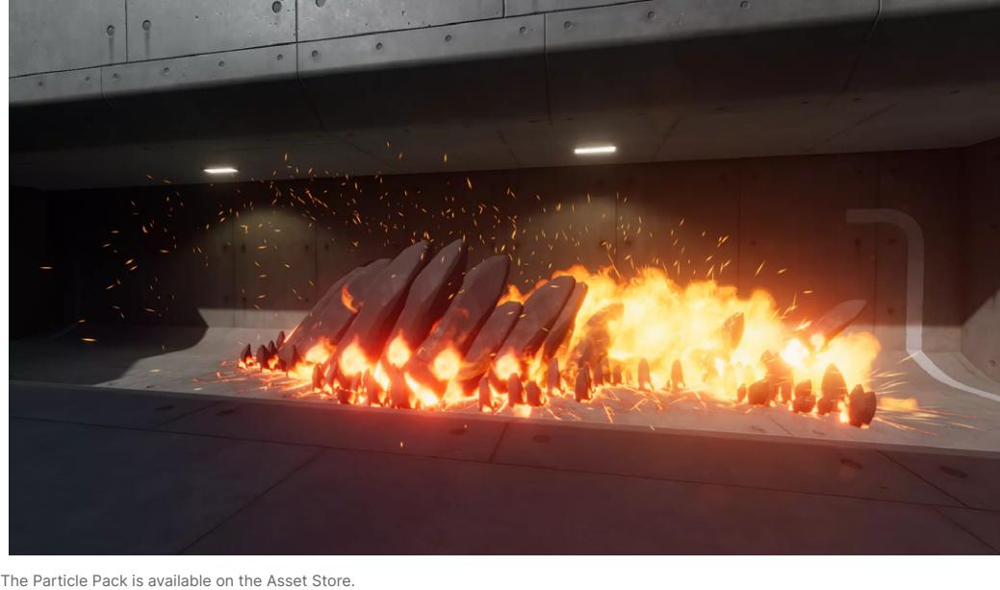
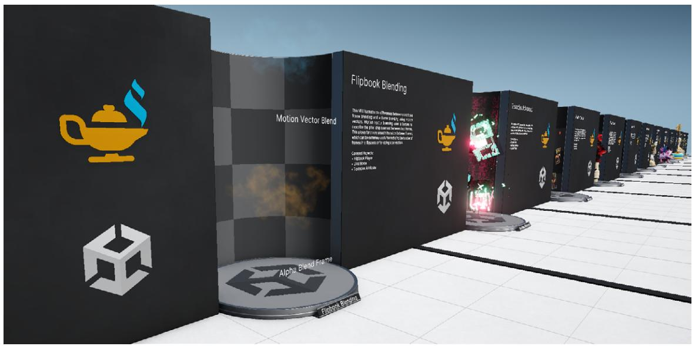
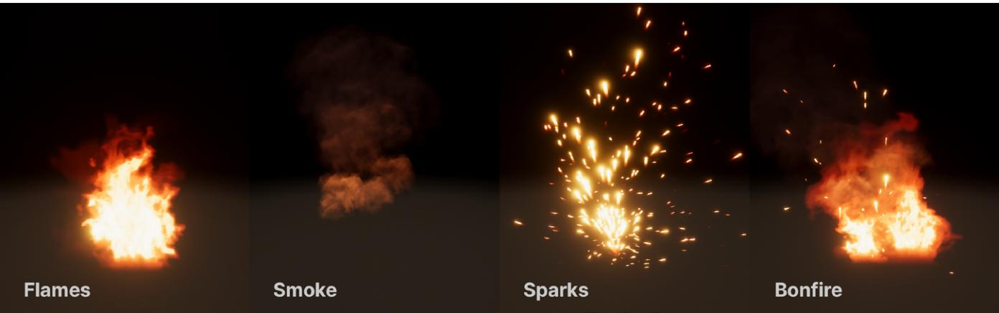
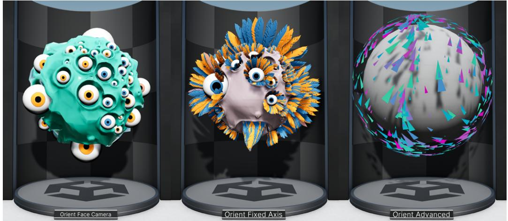
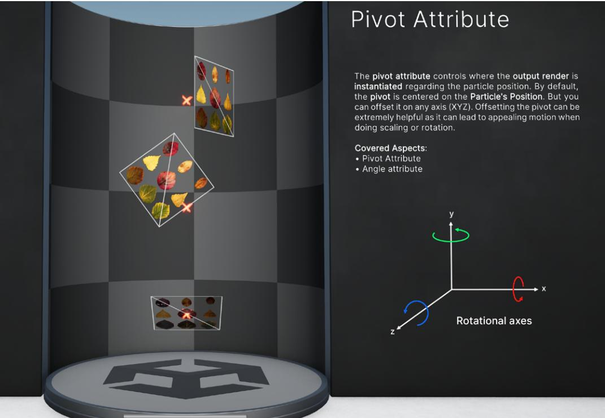
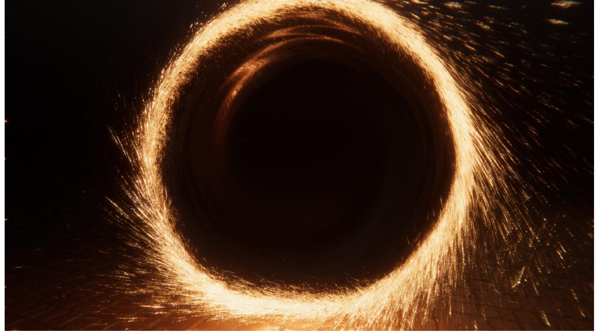
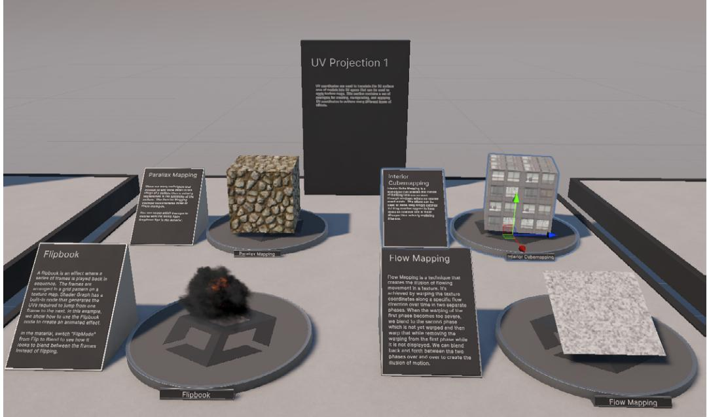
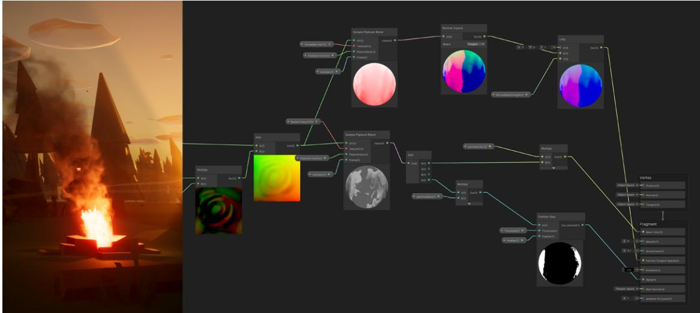

⟶ E-BOOK
| Introduction 7 |
|---|
| Contributors 8 |
| Main author 8 |
| Unity contributors 8 |
| External contributors 8 |
| Getting started with real-time VFX 9 |
| Visual workflow 11 |
| Core graphics packages 12 |
| Additional sample content 12 |
| The Built-In Particle System 13 |
| Introduction to the VFX Graph 16 |
| The VFX Graph Asset and component 17 |
| The VFX Graph window 19 |
| Graph logic 21 |
| Systems, Contexts, and Blocks 22 |
| Properties and Operators 27 |
| The Blackboard 30 |
| Group Nodes and Sticky Notes 32 |
| Subgraphs 33 |
| Attributes 35 |
| Blackboard Attributes 39 |
| Events 42 |
| Event Attributes 44 |
| UI improvements in Unity 6 45 |
| Node search 45 |
| Activation ports 46 |
|---|
| New VFX Toolbar 47 |
| Keyboard shortcuts 47 |
| Exploring VFX sample content 48 |
| More resources 55 |
| Additional references 55 |
| Visual effects by example 56 |
| VFX Graph Learning Templates 56 |
| Visualizing gizmos 57 |
| Graph fundamentals 58 |
| Contexts & Data Flow 58 |
| Spawn Context 59 |
| Capacity Count 59 |
| Multiple Outputs 60 |
| Bounds 61 |
| Particle orientation and rotation 62 |
| Texturing and flipbooks 63 |
| Particle pivots 65 |
| Mesh and texture sampling 66 |
| Collisions and interactivity 69 |
| Decal particles 72 |
| Particle Strips 73 |
| The VFX Graph Samples (HDRP) 79 |
| Smoke Portal 80 |
| Six-way lighting for real-time smoke 84 |
| GooBall 87 |
| Physics-based effects 92 |
| The Ribbon Pack 95 |
|---|
| Meteorite sample 98 |
| Mesh sampling effects 102 |
| Skinned Mesh sampling 105 |
| More examples 107 |
| Render pipelines and VFX Graph 108 |
| VFX Graph for URP 109 |
| Lit output 109 |
| 2D Renderer and Shader Graph support 110 |
| Decals 111 |
| Six-way smoke lighting 111 |
| Motion vectors 111 |
| Camera buffer 111 |
| VFX Graph for HDRP 112 |
| Ray tracing support 112 |
| Volumetric Fog output 113 |
| Shader Graph integration 114 |
| Built-in Outputs 114 |
| Shader effects 115 |
| Shader Graph and VFX Graph 122 |
| Shader Graph Feature Examples 123 |
| Interactivity 124 |
|---|
| Event Binders 124 |
| OnPlay and OnStop Events 125 |
| Mouse Event Binder 126 |
| Rigidbody Collision Event Binders 127 |
| Trigger Event Binder 128 |
| Visibility Event Binder 129 |
| Timeline 130 |
| Event Attributes 132 |
| Property Binder 133 |
| Output Events 136 |
| Pipeline tools 139 |
| Point Caches 139 |
| Point Cache Bake Tool 140 |
| Using Point Caches 141 |
| Signed Distance Fields 142 |
| Using SDFs 142 |
| SDF Bake Tool 143 |
| Vector Fields 144 |
| TFlow (Asset Store) 145 |
| VFXToolbox 145 |
| Image Sequencer 145 |
| Digital Content Creation tools 146 |
| SideFX Houdini 146 |
| Autodesk Maya 146 |
| Blender 147 |
| Adobe Photoshop 147 |
| Optimization 148 |
|---|
| Profiling and Debug panels in VFX Graph 149 |
| Graph Debug Information panel 149 |
| Particle System Info panel 150 |
| Context Debug panels 150 |
| The Unity Profiler and Frame Debugger 151 |
| VFX Control Debug modes 153 |
| Bounds 155 |
| Mesh LOD 156 |
| Mesh Count 158 |
| Advanced features 160 |
| Graphics Buffer support 160 |
| Custom HLSL 162 |
| Additional resources 164 |
| Video tutorials 165 |
| VFX projects on GitHub 166 |
Whether you plan on shooting fireballs from your fingertips or traveling through a wormhole, visual effects (VFX) in a game make the impossible, well, possible. Not only do they enhance the atmosphere and help tell the story of your game, visual effects bring imagined worlds to life with details that can truly captivate your players.
Unity is pushing the boundaries of real-time graphics with tools such as the VFX Graph. This node-based editor enables technical and VFX artists to design dynamic visual effects – from simple common particle behaviors to complex simulations involving particles, lines, ribbons, trails, meshes, and more.
Our comprehensive guide is intended for artists and creators looking to incorporate the VFX Graph into their game applications. It provides specific instructions on how to use the VFX Graph and its related tools to build real-time visual effects in Unity.
Taking into account experiences of solo developers and those on hundred-person teams, this guide is filled with many examples to make our AAA-quality tools more accessible. This way, everyone can find themselves at the fun part of game design.
Important note: This revised edition includes new features and quality of life improvements available with Unity 6 and above. Please ensure that you install Unity 6 from the Unity Hub to follow along with this guide. Also note that the naming convention for Unity releases has changed from Unity 6 and for future releases. Read more about the new naming standard in this Discussions post.
The Smoke Portal from the VFX Graph Samples
Wilmer Lin is a 3D and visual effects artist with over 15 years of industry experience in film and television, now working as an independent game developer and educator. Wilmer's feature credits include X-Men: Days of Future Past, The Incredible Hulk, and The Chronicles of Narnia: The Lion, the Witch, and the Wardrobe.
Mathieu Muller, lead product manager for graphics Vlad Neykov, director, software engineering, quality Orson Favrel, technical artist (creator of many of the new samples used in the book) Julien Fryer, graphics engineer Fred Moreau, technical product manager
Marie Guffroy, technical artist Thomas Iché, VFX artist and specialist
Today's gamers crave deeply immersive experiences. As hardware advancements push the limits of what mobile and console platforms can do, what used to be available only for creating Hollywood blockbusters can now be attained in real-time.
VFX Graph examples
Visual effects in games continue to have their moment as both interest and investment in advanced graphics trend upward. After all, gameplay effects transport your players into the action.
It's difficult to imagine a fantasy role-playing game (RPG) without characters casting magic, or a hack-and-slash brawler without glowing weapon contrails. When race cars plow the asphalt, we expect that they kick up a cloud of dust in their wake.
Not even your environments are the same without visual effects. If you're telling a film noir detective story, you'll likely cloak your cityscape in rain and fog. But if your characters go on a quest through the wilderness, you might make your foliage and vegetation sway in the wind, reacting to their every move.
V Rising by Stunlock Studios is a game made with the High Definition Render Pipeline and VFX Graph.
Visual effects uniquely enhance the gaming experience. However, creating them requires you to don the mantle of a multidisciplinary artist who can manipulate shape, color, and timing.
That's where the VFX Graph comes in. This sophisticated tool is equipped with workflows that reflect those of motion picture VFX – except working at 30, 60, or more frames per second (fps).
Image from a project in development by Sakura Rabbit, made with Unity's VFX tools
For complex, AAA-level visual effects on high-end platforms, use the VFX Graph to create GPU-accelerated particles in an intuitive, node-based interface.
Leverage the VFX Graph to:
The VFX Graph works with the Universal Render Pipeline (URP)* and the High Definition Render Pipeline (HDRP). It also adds support for the Lit outputs and 2D Renderer available with URP. Check the VFX Graph feature comparison for all render pipelines here, and read more about the VFX Graph's compatibility in the documentation.
The VFX Graph requires compute shader support to maintain compatibility with your device. Supported devices include:
When you install the latest release of Unity, the most recent packages for URP, HDRP, Shader Graph, VFX Graph, and more, are included. Core graphics packages are now embedded within the main Unity installer to ensure that your project is always running on the latest, verified graphics code.
For details, see Getting started with VFX Graph.
| 00 | Package Manager | ||||
|---|---|---|---|---|---|
| ロ Package Manager | |||||
| 十 ▼ Sort: Name (asc) ▼ | Filters ▼ Clear Filters | : | |||
| In Project G Updates |
Q Search Unity Registry Unity Ul |
2.0.0 © | Visual Effect Graph 17.0.3 · June 17, 2024 Release From Unity Registry by Unity Technologies Inc. |
Remove | |
| H Unity Registry | Universal RP | 17.0.3 € | com.unity.visualeffectgraph | ||
| C My Assets | User Generated Content | 3.0.1 | Documentation Changelog Licenses | ||
| Built-in | User Generated Content Bridge User Reporting |
3.0.0 2.0.11 |
Description Version History Dependencies Samples | ||
| Services Version Control Visual Effect Graph Visual Scripting |
2.4.3 G 17.0.3 € |
VisualEffectGraph Additions 26.46 MB O | Reimport | ||
| 1.9.4 (-) | Additional Assets for use with Visual Effect Graph OutputEvent Helpers 34.67 KB C Reimport |
||||
| Visual Studio Editor | 2.0.22 @ | Import Samples | |||
| Vivox | 16.3.0 | Additional Helper Scripts that intercept Output Events and interact with Game Objects Learning Templates 31.32 MB C Additional sample, composed of VFX Graph assets that explain and illustrate behaviors and VFX Graph concepts and features |
|||
| WebGL Publisher | 4.2.3 | ||||
| XR Hands | 1.4.1 | Reimport | |||
| XR Interaction Toolkit | 3.0.4 | ||||
| XR Plugin Management | 4.4.1 | ||||
| TiunDI Diguar Last update Jun 27, 23:33 |
299 C |
Install sample content from the Package Manager.
If you're new to the VFX Graph, consider installing the Samples in the Package Manager. These contain some basic examples for you to explore:
— The new Learning Templates: The Learning Templates sample is a collection of VFX assets designed to help you learn about VFX Graph concepts and features. It's compatible with both URP and HDRP render pipelines.
The new Learning Templates sample showcases different VFX Graph features.
— The Visual Effect Graph Additions: This includes example prefabs of fire, smoke, sparks, and electricity. Each sample shows a stripped down effect to illustrate fundamental graph logic and construction. Just drag and drop one of the sample Prefabs into the Hierarchy to see them in action.
Samples from the Visual Effect Graph Additions package
If your target platform does not meet the minimum system requirements for the VFX Graph, the Built-In Particle System is another option for creating real-time effects in Unity. Access the Built-In Particle System by selecting GameObject > Effects > Particle System.
Like the VFX Graph, the Built-In Particle System allows you to create a variety of effects such as fire, explosions, smoke, and magic spells. It remains a valuable tool for real-time effects, even though it renders fewer particles than the VFX Graph.
The primary distinction between the VFX Graph and the Built-In Particle System lies in their hardware. The Built-In Particle System is simulated on the CPU, whereas the VFX Graph moves many of the calculations to compute shaders, which run on the GPU.
The VFX Graph has the advantage of simulating millions of particles, but there's a caveat; being simulated on the GPU means that it's computationally nontrivial to read data back to the CPU and to interact with other systems that live on the CPU.
If you're using a mobile platform, you'll need to verify that it supports compute shaders in order to use the VFX Graph. Otherwise, you might need to use the Built-In Particle System for CPU-based effects.
Comparing the Built-In Particle System with the VFX Graph
The Built-In Particle System can use the underlying physics system and interact with gameplay more directly, but its particle count is limited and its simulations must stay relatively straightforward.
Download the Particle Pack from the Unity Asset Store to get a set of examples with the Built-In Particle System. This sample asset demonstrates a variety of in-game effects (fire, explosions, ice, and dissolves, among others). You can also check out this Dev Takeover for more information on using Shader Graph with the Built-In Particle System.
URP offers standard shaders (Lit, Unlit, Simple Lit) for the Built-In Particle System, whereas HDRP provides Shader Graph-based shader samples from the HDRP package sample. You can review the particle system feature comparison for render pipelines here.

Note: Experimental features are not fully validated and are thus subject to change. The full release version of Unity is recommended for production work. Please see this Discussions post about how naming conventions will change with the release of Unity 6.
You can enable experimental features from this guide via Preferences > Visual Effects > Experimental Operators/Blocks, as shown here:
| . . | Preferences | |
|---|---|---|
| Preferences | ||
| ರ | ||
| General 2D Physics Al Navigation V Analysis Profiler Asset Pipeline Colors Diagnostics External Tools GI Cache Graphics Jobs Package Manager Recorder Rider Scene View Scene Template V Search |
Visual Effects Experimental Operators/Blocks Show Additional Debug info Verbose Mode for compilation Experimental shader externalization Generate Shaders with Debug Symbols Force Compilation in Edition Mode Main Camera fallback Show Target in Shader Graph (deprecated) Authoring Prewarm Step Count Per Second 20 Authoring Prewarm Maximum Time |
> Prefer Main Camera 3 |
| Indexing Shader Graph Timeline |
||
| Visual Effects | ||
| Visual Scripting |
Any visual effect in the VFX Graph is made up of these two parts:
As Unity stores each VFX Graph in the Assets folder, you must connect each asset to a Visual Effect component in your scene. Keep in mind that different GameObjects can refer to the same graph at runtime.
The VFX Graph Asset and Visual Effect component
To create a new visual effect, right-click in the Project window and navigate to Create > Visual Effects > Visual Effects Graph.
This opens a creation wizard that allows you to select a starting template. You can begin with one of the default VFX Graphs or choose one of the Learning Templates from the Samples.
Note that the Learning Templates won't appear in the window unless the additional packages are installed in the Package Manager.
Select a template to create a new VFX Graph.
To add the effect to the scene, attach a Visual Effect component to a GameObject and then connect the VFX Graph Asset. There are few ways to do this:
The VFX Graph Asset contains all the logic. Select one of the following ways to edit its behavior:
— Click the Edit button next to the Asset Template property in the Visual Effect component.
| ﻩ Do BonFire Clouds Shaders Textures FlyingLeaves Leaves_4x1 |
|---|
| ▼ Visual Effect | � 花 : | |
|---|---|---|
| T General | ||
| Asset Template | � BonFire | Edit 0 |
| Random Seed | 0 | Reseed |
| Reseed on play | > | |
| I |
Three ways to open a VFX Graph
The asset opens in the VFX Graph window, available under Window > Visual Effects > Visual Effect Graph.
Familiarize yourself with this window's layout, including its:
The VFX Graph window
Make sure you leave some space in the Editor layout for the Inspector. Selecting part of the graph can expose certain parameters, such as partition options and render states.
| : ■× | 3 Q Layers | ▼ Default | ||||
|---|---|---|---|---|---|---|
| Blackboard Control Advanced ▼ | O Inspector | a : | ||||
| O► Arc Sphere ರ |
1 | (Attribute From Curve) 8 |
||||
| Set Lifetime Random (Uniform) | VV | Attribute | color | |||
| O A |
Composition | Overwrite | ||||
| 8 | Alpha Composition | Overwrite | ||||
| O B |
10 | Sample Mode | RandomConstantPerParticle | |||
| Add Velocity from Direction & Speed (New Direction) | VV | Mode Color Mode |
PerComponent ColorAndAlpha |
> | ||
| Speed Mode | Constant | of ages of each of the later of the later of the later of the later of the later of the later of the later of the later of the later of the later of the later of the later of | ||||
| O ► Direction C × 0 |
y O z 1 |
|||||
| 0 Speed |
||||||
| Direction Blend O |
O | 1 | ||||
| Set Color Random from Gradient (Constant per-particle) | VV | |||||
| Sample Mode | Random Constant Per Particle | |||||
| Color Mode | Color And Alpha | |||||
| O Color |
||||||
| Seed O |
O | |||||
| - | " Particle | |||||
Use the Inspector to change certain parameters.
You must build your visual effect from a network of nodes inside the window's workspace. The VFX Graph uses an interface similar to other node-based tools, such as Shader Graph.
Press the spacebar or right-click to create a new graph element. With the mouse over the empty workspace, select Create Node to create a graph's Context, Operator, or Property. If you hover the mouse above an existing Context, use Create Block.
A VFX Graph can consist of a complex network
Opening up a complex VFX Graph can be daunting at first. Fortunately though, while a production-level graph can include hundreds of nodes, every graph follows the same set of rules – no matter its size.
Let's examine each part of the VFX Graph to learn how they work together.
A VFX Graph includes one or more vertical stacks called Systems. Systems define standalone portions of the graph and encompass several Contexts. A System is denoted by the dotted line that frames the Contexts it consists of.
Each Context is composed of individual Blocks, which can set Attributes (size, color, velocity, etc.) for its particles and meshes. Multiple Systems can work together within one graph to create the final visual effect.
The vertical logic in a graph flows downward.
Select Insert template from the menu dropdown to add a sample System from the existing templates to the current VFX Graph. This can help you get started with some pre-built graph logic. Select one of the Default VFX Graph Templates for a simple System, or choose one of the Learning Templates if it's similar to your intended effect (see Exploring VFX sample content below).
Insert a template from the menu.
The Visual Effect in the Scene and Game View
If you select the Minimal System template from the Default VFX Graph Templates, you'll see a barebones System, which includes four parts like this:
A Minimal System from the default templates
The flow between the Contexts determines how particles spawn and simulate. Each Context defines one stage of computation:
Systems and Contexts form the backbone of the graph's "vertical logic," or processing workflow. Data in a System flows downward, from top to bottom, and each Context encountered along the way modifies the data according to the simulation.
Systems are flexible, so you can omit a Context as needed or link multiple outputs together. This example shows more than one Output Context rendering within the same System.
More than one Output Context within the same System
Contexts themselves behave differently depending on their individual Blocks, which similarly calculate data from top to bottom. You can add and manipulate more Blocks to process that data.
Click the button at the top-right corner of a Context to toggle the System's simulation space between Local and World.
Examples of different Blocks
Blocks can do just about anything, from simple value storage for Color, to complex operations such as Noises, Forces, and Collisions. They often have slots on the left, where they can receive input from Operators and Properties.
See the Node Library for a complete list of Contexts and Blocks.
Just as Systems form much of the graph's vertical logic, Operators make up the "horizontal logic" of its property workflow. They can help you pass custom expressions or values into your Blocks.
Horizontal logic
Operators flow left to right, akin to Shader Graph nodes. You can use them for handling values or performing a range of calculations.
Use the Create Node menu (rightclick or press the spacebar) to create Operator Nodes. You can also drag an Edge Connection from a property slot and release it in an empty space, which will open the same menu with only the compatible Operators displayed.
Create an Operator Node from the menu.
These Operators from the Bonfire sample, for instance, compute a random wind direction.
| Random Wind Direction over Time | ||||
|---|---|---|---|---|
| Perlin Noise 3D Dimensions Three Perlin Type O▼ Coordinatex Total Time (VFX) O × O Y Total Time @ J Z O 0 O Frequency 1 O Octaves ● O Roughness -------- 0.5 O Lacunarity 2 O► Range x -1 y 1 |
V D > Noise O ► Derivatives @ -- |
Remap (Vector3) Clamp [] -- ◎► Input O ► Old Range Min x x -1 O ► Old Range Max x 1 y 1 O ► New Range Min x -0.2 y O z -0.2 O► New Range Maxx 0.2 y 0 z 0.2 |
Vector 4, v ------------------------------------------------------------------------------------------------------------------------------------------------------------------------------ > 0- |
V ▶ ◎ -- |
How wind direction is determined in the Bonfire sample
Properties are editable fields that connect to graph elements using the property workflow. Properties can be:
Properties change value according to their actual value in the graph. You can connect the input ports (to the left of the Property) to other graph nodes.
| ್ Update Particle | (WORLD) | ||
|---|---|---|---|
| Force | े | ||
| Mode | Absolute | D | Compound |
| O▼ Force 0 × O Y 0 Z |
C x 1 y O O O |
z 0 | Property set to Local space |
A Force Property in a Block
Property Nodes are Operators that allow you to reuse the same value at various points in the graph. They have corresponding global Properties that appear in the Blackboard.

Property Nodes
The Blackboard utility panel manages Properties and Attributes. To open it, click the Blackboard button in the window Toolbar or use the default Shift-1 shortcut.
To view Properties and Attributes together, select the All tab at the top of the Blackboard. To filter by type, select the respective Properties or Attributes tab.
Properties you define in the Blackboard act as global variables that you can reuse throughout the graph as Property Nodes. For example, you can define a bounding box property once and then apply it across multiple particle systems within the same graph.
Properties in the Blackboard are either:
New properties are set to Exposed by default, and as such, appear in the Inspector. You must uncheck the Exposed option if you want to hide your Property outside of the graph, and create Categories to keep your properties organized.
| BlackboardExample + |
||
|---|---|---|
| All Properties Attributes |
||
| ▼ Properties | ||
| Exposed | · Collision Plane V |
Plane |
| Property | Exposed > |
|
| Value Gr Position × 0 z 0 y 0.507957 |
||
| Normal × 0 z 0 y 1 |
||
| Tooltip | ||
| Init Spawn Cone V |
Arc Cone | |
| Exposed | ||
| Constant | Value មិន |
|
| Property | ► Cone | |
| Arc | ● 6.283 | |
| Tooltip | ||
| ▼ Attributes | ||
| Custom Attributes | ||
| T Built-in Attributes | ||
| Basic Simulation | ||
| > 1.1 age | D | |
| Attributes - | alive > |
D |
| lifetime > |
D | |
| 2 position > |
D | |
| 12, velocity > |
P | |
| Advanced Simulation | D | |
| > 2 angle | ||
| angularVelocity > |
D | |
| A direction > |
e |
The Blackboard and its available properties
The Blackboard also manages both built-in and custom Attributes, which you can drag and drop into the graph or create directly from the interface. Each Attribute includes a short description. Hover over an attribute to highlight where it appears in the graph.
The Sample Skinned Mesh template includes a custom Attribute.
As your graph logic grows, use Group Nodes and Sticky Notes to cut down on clutter. With Group Nodes, you can label a group of nodes and move them as one. On the other hand, Sticky Notes operate like code comments.
To create Group Nodes, select a group of nodes, right-click over them, then choose Group Selection. You can also use the new default shortcut, Shift + G.
You can also drag and drop a node into an existing Group Node. Hover the node over the Group and release it once the Group highlights. To remove a node from a Group, hold the Shift key while dragging it out.
By deleting a Group Node, either with the Delete key or from the right-click menu, you do not delete its included nodes.
Meanwhile, you can use Sticky Notes to describe how a section of the graph works, plus leave comments for yourself or your teammates. Add as many Sticky Notes as you need and freely move or resize them.
Each Sticky Note has a title and a body. Right-click in the graph view to create a Sticky Note. Double-click on a text area to edit its content. Set the Theme color (dark/light) and Text Size from the right click menu to organize your notes.
Work with Group Nodes and add Sticky Notes.
A Subgraph appears as a single node, which can help declutter your graph logic. Use it to save part of your VFX Graph as a separate asset that you can drop into another VFX Graph for reorganization and reuse. You can package Systems, Blocks, and Operators into different types of Subgraphs.
Subgraphs can be created directly from the Project window. Navigate to Create > Visual Effect > Subgraph Operator or Subgraph Block to start a new Subgraph from scratch. This method allows you to design Subgraphs without first building them within an existing VFX Graph.
Alternatively, you can create a Subgraph by selecting a set of nodes when editing a VFX Graph, then choosing the appropriate Subgraph type (Block or Operator) from the right-click menu. For example, if you want to convert a set of Operators, select Convert To Subgraph Operator. Save the asset to disk, and the selected nodes will be replaced with a single Subgraph node.
| Velocity Noise Variation | |
|---|---|
| Get Position Current Perlin Curl Nolse 3D > Vector く Position . . > x - y - z x . |
Velocity Noise_Subgraph Operator ✔ |
| · · · · · · · · · · · · · · · · · · · · · · · · · · · · · · · · · · · · · · · · · · · · · · · · · · · · · · · · · · · Multiply (Vector - Local) ● ト A @ * x - VEX Time < |
* ( Group Selection Cut |
| Delta Time . - | Сору Paste |
| Convert To Subgraph Operator Delete |
|
| Duplicate | |
| Clear Ignored Errors Duplicate with edges |
|
| Collapse Operators Uncollapse Operators |
|
How to create a Subgraph
To create Input properties for the Subgraph, add new properties to the Blackboard and enable their Exposed flag.
To create Output properties for the Subgraph, add new properties, and move them to the Output Category in the Blackboard.
The Blackboard also allows you to define the menu Category where the Subgraph Block appears. Use this to sort or search for Subgraphs.
Creating a Subgraph is analogous to refactoring code. Just as you would organize logic into reusable methods or functions, a Subgraph makes elements of your VFX Graph more modular.
Custom HLSL in Unity 6 allows you to implement complex or unique particle behaviors that aren't easily achievable using the standard VFX Graph nodes. For example, you could create custom physics simulations, particle interactions, or flocking behaviors.
Regardless of your experience level, you can start creating effects with the VFX Graph. Begin with a premade effect to get familiar with the workflow, and then gradually assemble your own graphs.
An Attribute is a piece of data you might use within a System, such as the color of a particle, its position and size, or how many of them you should spawn. Attributes can be read or modified during the simulation to create dynamic effects.
Attributes can be of typexq float (single-precision floating-point), Vector2, Vector3, Vector4 (2D, 3D, 4D vectors), bool (true/false), or int/uint (integer/unsigned integer).
| Attribute | Type | Description | ||
|---|---|---|---|---|
| position | Vector3 | Defines the particle's location in System Space | ||
| velocity | Vector3 | Determines the speed and direction of the particle's movement |
||
| age | float | The age of the simulated element, since its spawn, expressed in seconds |
||
| lifetime | float | The life expectancy of a simulated element, expressed in seconds |
||
| color | Vector3 | Sets the RGB color of the particle | ||
| alpha | float | Adjusts the transparency of the particle | ||
| size | float | Controls the uniform size of the particle | ||
| scale | Vector3 | Applies non-uniform scaling to the particle | ||
| mass | float | The mass of the particle, affecting how it responds to forces like gravity |
||
| direction | Vector3 | Stores arbitrary direction or can be used to guide particle movement |
||
| angularVelocity | Vector3 | The rotation speed of the particle, expressed in degrees per second |
||
| targetPosition | Vector3 | A target position the particle should move towards, useful in certain effects like Line Renderers |
||
| texIndex | float | The animation frame used for sampling Flipbook UVs for a rendered element |
Attributes are essential for managing the fundamental aspects of your VFX Graph particles. See the Standard Attributes documentation page for a complete list.
You can also use the Attributes tab in the Blackboard (see below) to explore many of the builtin Attributes or for defining a custom Attribute.
Use nodes to read from or write to Attributes. In particular, use the:
Get the Attribute with an Operator and set the Attribute with a Block.
Most Attributes are stored per particle, which can increase the memory footprint as the number of particles and Attributes grows. For instance, if you have 10,000 particles and each particle stores multiple Attributes like position, velocity, color, and size, the memory required to maintain this data can become significant.
Monitor and optimize your Attributes by using the System Attribute Summary and Current Attribute Layout displayed in the Inspector when you select a Context:
For example, in the Trigger Event on Collide template, if you select a Context within the Dart_ Spawn System, the Inspector shows:
| Name Capacity |
Value 32 |
||||||
|---|---|---|---|---|---|---|---|
| System Attribute Summary alive |
Boolean | ReadWrite | |||||
| color | Float3 | 4 bytes | ReadWrite, | ||||
| Float | 12 bytes | ||||||
| angleZ direction |
Float3 | 4 bytes | ReadWrite, ReadWrite |
||||
| 12 bytes | |||||||
| lifetime seed |
Float Uint32 |
4 bytes | ReadWrite ReadWrite |
||||
| 4 bytes | |||||||
| position | Float3 | 12 bytes | ReadWrite | ||||
| velocity | Float3 | 12 bytes | Read Source | ||||
| collisionEventPosition | Float3 | 12 bytes | ReadSource | ||||
| particleId | Uint32 | 4 bytes | Read | ||||
| pivotX | Float | 4 bytes | Read | ||||
| pivotY | Float | 4 bytes | Read | ||||
| pivotZ | Float | 4 bytes | Read | ||||
| size | Float | 4 bytes | ReadWrite | ||||
| scaleX | Float | 4 bytes | Read | ||||
| scaleY | Float | 4 bytes | Read | ||||
| scaleZ | Float | 4 bytes | Read | ||||
| axisX | Float3 | 12 bytes | Read Write | ||||
| axisY | Float3 | 12 bytes | ReadWrite | ||||
| axisZ | Float3 | 12 bytes | Read Write | ||||
| angleX | Float | 4 bytes | Read Write | ||||
| angleY | Float | 4 bytes | ReadWrite | ||||
| age | Float | 4 bytes | ReadWrite | ||||
| Current Attribute Layout | |||||||
| O | alive | aqe | |||||
| 1 | color | color | color | ||||
| 2 3 |
directio lifetime |
directio | directio angleZ positior positior positior particle | ||||
| Source Attribute Layout | |||||||
| 0 | positior | positior positior alive velocity velocity velocity | |||||
| 1 | angleZ | ||||||
| 2 3 |
lifetime | ||||||
| 4 | color collisior |
color age |
color | ||||
| 5 | collisior | collisior | collisior |
Use the Inspector to see Attribute usage in the Context.
To optimize memory usage, a System only stores Attributes that are actively needed. If an Attribute's simulation data hasn't been stored, VFX Graph will use its default constant value instead of storing unnecessary data. See the Optimization section for more details about the profiling tools in VFX Graph.
The Blackboard panel now has a new section dedicated to Attributes, making it easier to create the corresponding Operators or Blocks with a context-sensitive drag and drop. These new features are available in Unity 6:
The various parts of a VFX Graph communicate with each other (and the rest of your scene) through Events. For example, each Spawn Context contains Start and Stop flow ports, which receive Events to control particle spawning.
| Event | Event | |||||
|---|---|---|---|---|---|---|
| Event Name | OnPlay Send |
Event Name | OnStop | Send | ||
| 4 SpawnEvent |
SpawnEvent | |||||
| Start | Stop | |||||
| Spawn 4 |
||||||
| Spawn system | ||||||
| Constant Spawn Rate | ン | |||||
| O Rate | 16 | |||||
| SpawnEvent | ||||||
Events control particle spawning.
When something needs to happen, external GameObjects can notify parts of your graph with the SendEvent method of the C# API. Visual Effect components will then pass the Event as a string name or property ID.
An Event Context identifies an Event by its Event string name or ID inside a graph. In the above example, external objects in your scene can raise an OnPlay Event to start a Spawn system or an OnStop Event to stop it.

An Output Event can send messages to the scene.
You can combine an Output Event with an Output Event Handler. Output Events are useful if the initial spawning of the particles needs to drive something else in your scene. This is common for synchronizing lighting or gameplay with your visual effects.
The above example sends an OnReceivedEvent to a GameObject component outside of the graph. The C# script will then react accordingly to intensify a light or flame, activate a spark, etc. See the Interactivity section for more information on Output Events.
At the same time, you can use GPU Events to spawn particles based on other particle behavior. This way, when a particle dies in one system, you can notify another system, which creates a useful chain reaction of effects, such as a projectile particle that spawns a dust effect upon death.
| ** Update Particle | (LOCAL) | |||
|---|---|---|---|---|
| Trigger Event Rate (Over Distance) | ে ১ | |||
| Mode | Over Distance | > | GPUEvent | |
| O Rate | 200 | トevt ● | ® ► Evt | |
| Set Position | ン | SpawnEvent | ||
| のト Position | 1 | |||
| ੁ Particle | ||||
These Update Blocks can send GPU Event data in the following way:
The Blocks' outputs connect to a GPU Event Context, which can then notify an Initialize Context of a dependent system. Chaining different systems together in this fashion helps you create richly detailed and complex particle effects.
The Initialize Context of the GPU Event system can also inherit Attributes available in the parent system prior to the Trigger Event. So, for instance, by inheriting its position, a new particle will appear in the same place as the original particle that spawned it.
Use Event Attribute Payloads to pass data like 3D position or color along with the Event. These Payloads carry Attributes that implicitly travel through the graph where you can "catch" the data in an Operator or Block.
You can also read Attributes passed with Spawn Events or Timeline Events. The Set SpawnEvent Attribute Block modifies the Event Attribute in a Spawn Context.
Reading an Event Attribute in a Spawn Context
To catch a Payload in an Initialize Context, use Get Source Attribute Operators or Inherit Attribute Blocks.
However, it's important to keep these caveats in mind when using Event Attributes:
See Sending Events in the Visual Effect component API for more details.
Unity 6 includes several quality of life improvements and updates to the VFX Graph UI.
Creating nodes or blocks now uses a hierarchical tree view, making it easier to browse the node library. Enhancements include custom colors and a favorites folder for a more efficient and personalized search experience. Use the advanced search filtering to select from the available nodes.
The new side detail panels also display any node sub-variants (e.g., Output Particle Unlit Octagon and Output Particle Unlit Triangle are sub-variants of Output Particle Unlit Quad). You can toggle the button to show sub-variants to control their visibility. Disable it to see only the most common nodes, or enable it to access all available variants.
Creating nodes or blocks adds a side panel and search filtering.
A Block has a special activation port, located on the top left next to its name, which is linked to a boolean property. This port allows you to control whether a Block is active.
You can manually toggle the Block on or off, or connect graph logic to the port to control when the Block should be active. This allows you to implement different behaviors or states per particle within the same system.
Note that statically inactive Blocks are grayed out and automatically removed during compilation, resulting in zero runtime cost.
Each block includes an Activation port.
The VFX toolbar has been simplified and now includes new options for quick access to documentation and samples.
The VFX Toolbar has been simplified.
The Shortcut Manager now has a VFX Graph category that lets you modify the shortcut command available in the Visual Effect Graph window. New shortcut commands have been added to speed up the VFX artist's workflow.
| ●● | Shortcuts | ||||||||||||||||||
|---|---|---|---|---|---|---|---|---|---|---|---|---|---|---|---|---|---|---|---|
| Shortcuts | |||||||||||||||||||
| Esc F2 |
F8 F3 F5 F6 F7 |
F9 | Unassigned Key Assigned Key F10 F11 F12 F13 F14 |
F15 | Global Key Mixed Key → |
||||||||||||||
| 3 | 4 | 5 | 6 | 7 | 8 | 9 | 0 | € | Ins | Hom | Pg Up |
MO | M1 ← |
||||||
| Tab | (8) | W | U | 0 | D | Del | End | Pg Dil |
|||||||||||
| Caps Lock | G | D | C | 1 | J | Return | M4 | ||||||||||||
| Shift | C | B | Shift | M3 | |||||||||||||||
| Control | Option | Command | Space | Command | Option | ||||||||||||||
| Default | Import | Export | વ્યુ- | ||||||||||||||||
| Category | Command | Context | Type | Shortcut | |||||||||||||||
| SnaderGrapn | Insert Node on Link | VFX View Window | Action | GR | A | ||||||||||||||
| Stage | Add Node: Coll | VFX View Window | Action | P | |||||||||||||||
| Terrain | Add Node: Sample Texture 2D | VEX View Window | Action | CE | |||||||||||||||
| Timeline | Frame Previous | VEX View Window | Action | ||||||||||||||||
| Tools | Toggle Auto Compile | VEX View Window | Action | GA | |||||||||||||||
| TrailRenderer | Toggle Blackboard | VFX View Window | Action | 价1 | |||||||||||||||
| Transform | Restart VFX | VEX View Window | Action | · Space | |||||||||||||||
| UI Builder | Add Node: Sample Gradient | VTX View Window | Action | TG | |||||||||||||||
| URP | Add Node: Multiply | VFX View Window | Action | TM | |||||||||||||||
| Version Control | Add Node: Branch | VFX View Window | Action | TY | |||||||||||||||
| Visual Effect Graph | Add Node: Step | VIX View Window | Action | 77 | |||||||||||||||
| Window | Desplact All | VEX View Window | Action | AD |
The Shortcut Manager now has a VFX Graph category.
A VFX Graph is more than the sum of its parts. It requires a solid understanding of how to apply each Node and Operator, along with the ways they can work together.
Two samples, available in the Package Manager, can help show these features in context: The VFX Graph Learning Templates and the VFX Graph Additions.
| 00 | Package Manager | ||||
|---|---|---|---|---|---|
| ロ Package Manager | |||||
| + ▼ Sort: Name (asc) ▼ Fliters ▼ Clear Fillers | : | ||||
| In Project G Updates |
Q Search Unity Registry Unity Ul |
2.0.0 © | Visual Effect Graph 17.0.3 · June 17, 2024 Release From Unity Registry by Unity Technologies Inc. |
Remove | |
| Hi Unity Registry | Universal RP | 17.0.3 € | com.unity.visualeffectgraph | ||
| C My Assets | User Generated Content | 3.0.1 | Documentation Changelog Licenses | ||
| Built-in | User Generated Content Bridge | 3.0.0 | |||
| User Reporting | 2.0.11 | Description Version History Dependencies Samples | |||
| Services | Version Control | 2.4.3 O | VisualEffectGraph Additions 26.46 MB (7) | Reimport | |
| Visual Effect Graph | 17.0.3 € | Additional Assets for use with Visual Effect Graph | |||
| Visual Scripting | 1.9.4 (-) | ||||
| Visual Studio Editor | 2.0.22 @ | OutputEvent Helpers 34.67 KB (3) | Reimport | Import Samples | |
| Vivox | 16.3.0 | Additional Helper Scripts that intercept Output Events and interact with | |||
| WebGL Publisher | 4.2.3 | Game Objects | |||
| XR Hands | 1.4.1 | Learning Templates 31.32 MB (2) | Reimport | ||
| XR Interaction Toolkit | 3.0.4 | Additional sample, composed of VFX Graph assets that explain and | |||
| XR Plugin Management | 4.4.1 | illustrate behaviors and VFX Graph concepts and features | |||
| ZIUSDT DIGUA | 233 | ||||
| Last update Jun 27, 23:33 | రా |
Install the sample content from the Package Manager.
The VFX Graph Learning Templates showcase a number of techniques. This collection of education samples can help you explore a specific aspect or feature set of VFX Graph.
The sample content is compatible with both URP and HDRP projects, for VFX Graph versions 17.0 (Unity 6) and later.

Get started using the VFX Graph Learning Templates.
Use the Scene view to move around freely or the Game view to focus on each effect. The Sample Showcase Window in the Inspector displays the corresponding information, with quick-access links to the documentation or to navigate between effects. Each VFX asset includes embedded notes and explanations to guide you.
We will explore these samples in more detail under Visual effects by example.
Navigate each VFX Graph using the Sample Showcase Window.
Meanwhile, the VFX Graph Additions in the Package Manager demonstrate several simple graphs, making them a starting point for learning how to manage particles. In the example below, you can see how the Smoke, Flames, and Sparks build up to form the Bonfire effect:

The Flames effect shows a basic graph.
You'll encounter some common Blocks and Operators as you explore the samples provided:
— Noise and Random Operators: Procedural Noise helps reduce the "machine-like" look of your rendered imagery. The VFX Graph provides several Operators that you can use for one-, two-, and three-dimensional Noise and Randomness.
| Cellular Noise 1D | V | Value Noise 2D | V | Perlin Curl Noise 2D | V | |||||||
|---|---|---|---|---|---|---|---|---|---|---|---|---|
| Dimensions One | Cellular | > > |
Dimensions Two | Value | > > |
Dimensions Two | Perlin | > > |
||||
| Type | Type | Type | ||||||||||
| O O O |
Coordinate () Frequency 1 Octaves ● |
1 | Noise O Derivatives O |
O | O > Coordinatex 0 O Frequency 1 Octaves ● |
y 0 1 |
Noise O Derivatives O |
o O |
O > Coordinatex 0 Frequency 1 Octaves |
y 0 1 œ |
Noise O | |
| O O O ► Range |
Lacunarity 2 | Roughness -- 0.5 x -1 y 1 |
O O O ► Range |
Lacunarity 2 | Roughness -- 0.5 x -1 y 1 |
O O O |
Lacunarity 2 Amplitude 1 |
Roughness -- 0.5 | ||||
| Value Curl Noise 3D Dimensions Three |
V > |
Random Number | V | Random Vector | V | |||||||
| O 0 0 O |
Type O > Coordinatex 0 Frequency 1 Octaves œ Roughness - Lacunarity 2 |
Value y O z 0 1 0.5 T |
> Noise O |
Seed O 0 Max 1 O |
Per Part▼ Constant ✔ Min Q Seed O |
r O | O > Min Output x -1 O► Max Output x 1 0 0 O O Seed |
Normalized Per-Particle ✔ Constant |
230283 | y -1 z -1 y 1 z 1 |
> Output O | |
| O | Amplitude 1 Random Vector 3 |
V | ||||||||||
| O Scale 1 | ▼ Random Vector3 O | x O 0 y O 0 z O |
Page Selection Seed Column () Seed Row |
1 | ▼ RandomPage O | > × ○ y O |
Random Position (Circle) O > Circle O> Transform (L) O Surface |
(1) | 1 | V Position O |
Noise and Random Operators
— Attribute Blocks: These similarly include the option of applying Randomness in various modes. They can vary slightly per Attribute, so experiment with them to familiarize yourself with their behavior.
| Add Age Random (Uniform) | |||||
|---|---|---|---|---|---|
| A O |
O | ||||
| O B |
O | ||||
| Add Axis X Random (Per-component) | |||||
| O ► A | (L) × 1 |
y O | z 0 | ||
| O ► B | × 1 (L) |
y O | Z O | ||
| Add Scale.XYZ Random (Per-component) | |||||
| Channels | XYZ | ||||
| O ▶ A | × 1 | y 1 | z 1 | ||
| O ► B | × 1 | y 1 | Z 1 | ||
| Add Al O A |
a random | Search | × | ||
| O | B Add Mass Random from Curve (Attribute Curve) | ||||
| Add Size Random from Curve (Attribute Curve) | |||||
| Set Mass Random from Curve (Attribute Curve) | |||||
| Set Size Random from Curve (Attribute Curve) | |||||
| Blend Alpha Random (Uniform) (Attribute Set) | |||||
| Add Alpha Random from Curve (Attribute Curve) Add Angle Random from Curve (Attribute Curve) |
|||||
| Add Pivot Random from Curve (Attribute Curve) | |||||
| Add Scale Random from Curve (Attribute Curve) | |||||
| Set Alpha Random from Curve (Attribute Curve) | |||||
| Set Angle Random from Curve (Attribute Curve) | |||||
| Set Pivot Random from Curve (Attribute Curve) | |||||
| Set Scale Random from Curve (Attribute Curve) | |||||
Randomness Blocks
— Flipbooks: An animated texture can do wonders to make your effects believable, as you can see in the Smoke and Flames samples. Generate these from an external Digital Content Creation (DCC) tool or from within Unity. Use Operators to manage the Flipbook Block.
For more information on creating your own flipbooks within Unity, check out the Image Sequencer in the VFXToolbox section.
Flipbook Nodes
— Physics: Forces, Collisions, and Drag are essential to making particles simulate natural phenomena. But don't be afraid to push the boundaries of what's real. As the artist, you get to decide what looks just right.
Physics Blocks
— Subgraphs: The Smoke, Flames, and Sparks are Subgraphs. They are the parts of a VFX Graph that can be saved as an asset for later reuse.
Splitting the main elements into smaller parts makes the Bonfire graph more readable. So if you need to make a new explosion effect somewhere else in your application, for example, you can now deploy it by dragging and dropping it into another graph. This works because the Subgraph is an asset.
The Bonfire graph uses three Subgraphs.

Individual Subgraph elements combine to form the Bonfire.
For a breakdown of how to construct the Bonfire graph, among other effects, watch these community videos from Thomas Iché, a senior VFX and technical artist involved in creating the samples and the Unity Spaceship Demo.
Once you're familiar with the basic workings of a VFX Graph, try building a few effects from scratch. Start with a simple system for falling snow, then play around with fire, smoke, and mist.
The following videos offer an introduction to several effects, however, please note they are using older versions of VFX Graph.:
As you get more comfortable with the VFX Graph, you can dive deeper to discover its nuances. Keep these pages handy when you need to reference specific Node or Operator functionalities:
Once you understand the fundamentals of the VFX Graph, challenge yourself to craft more complex graphs. A number of example projects are available to help you better prepare for problems you might encounter during production.
These samples run the gamut of what's possible for your visuals. From ambient smoke and fire to fully scripted, AAA cinematic gameplay, take your time to explore.
If you're still new to VFX Graph, this collection of VFX Graphs is the best place to start. The Learning Templates are composed of various real-time effects, each here to teach one or more aspects of VFX Graph.
The graphs are small and focused, making them ideal learning samples. Dive into each template to master a new technique or use it as a starting point for your own effect. Each graph comes with detailed notes to help you understand their construction.
The Learning Templates are available from the wizard when creating a new VFX Graph, or you can import them via the Package Manager as a complete sample scene for either URP or HDRP.
Use the VFX Samples Showcase window to navigate the samples. Let's take a quick tour of the Learning Templates.
The Samples Showcase window
Many Blocks have adjustable parameters that may correspond to visual gizmos in the Scene view. You can change the values directly within the Blocks themselves or manipulate the gizmos in the Scene view.
To manipulate the gizmo, you need to "attach" the VFX Graph that you're editing to a corresponding VFX instance in your scene.
| Link the VFX Graph to a GameObject with the VisualEffect component. |
|---|
Use the small "link" icon near the top of the window to attach the VFX Graph to the selected GameObject with Visual Effect component.
Once attached, selecting the corresponding block in the VFX Graph editor will sync and display. Use the handles of the gizmo to change the settings interactively.
These samples show the basics of graph logic and how to build and optimize your VFX Graphs.
This sample provides an overview and basic understanding of how data flow is handled in VFX Graph. It also presents an overview of the most frequently used Contexts and Blocks.
The Contexts & Data Flow sample
This VFX Graph demonstrates how to use the options in the Spawn Context to control how particles first appear. By utilizing the Spawn State, you can access valuable information such as the loop index, spawn count, loop state, and loop duration.
In the example effect, a stack of numbers appears to count up by manipulating the texture index. This is achieved by generating a single burst of particles with a small delay between each burst.
Use the Spawn Context.
Additionally, this example shows how to set attributes like lifetime, color, and alpha in the Spawn Context so they can later be inherited in the Initialize Particle Context.
This VFX Graph generates randomly sized particles within a volume to demonstrate how to use the Capacity attribute.
Capacity Count is used for the particle memory allocation of a system. Increasing this number will increase the memory allocated. This capacity serves as the maximum for the current number of active particles.
Increasing the Capacity Count increases the allocated memory.
This VFX Graph demonstrates how the Initialize or Update context can be wired to one or several output contexts. This allows you to create one particle simulation and generate several types of renderer on each particle.
In this demo, each particle renders as an unlit particle, a mesh, and a quad. For example, imagine using a Mesh Output to make the core of a missile and then a second Quad Output to add an emissive glow on top of it.
Use multiple Outputs for different effects.
Note that some Outputs are only compatible with a particular SRP (e.g. the HDRP Volumetric Fog output is only compatible with HDRP).
This shows how the Bounds settings can cull an effect to improve performance. In this example, the Bounds are deliberately set outside the camera frustum by default. As a result, the particles are culled (in this example, they may still cast shadows if enabled for the Output Context).
Adjust the Bounds settings so the Bounds gizmo is within the camera frustum and the particles reappear.
Adjust the Bounds settings to make the particles reappear.
Whether the output is set to quads, meshes, or even strips, you'll often want to control the orientation of the geometry on a particle. Should it face the camera? What is the forward and/ or up-axis? The Orient Block helps you to easily orient your particles with its various modes.
The Orient Face Camera, Orient Fixed Axis, and Orient Advanced VFX Graphs demonstrate different ways of using particle orientation.

These samples show different ways to orient the particles.
You can also rotate particles using the Angle attribute, as seen in the Rotation & Angle VFX Graph.
Use the Angle attribute to rotate the particles.
For more realistic results, use angular velocity. The Rotation & Angular Velocity sample shows how to set this in the Initialize Context and then use the Update Context to update the rotation.
Use angular velocity for more realistic motion
Real-time VFX often rely on sprite sheets.The TexIndex Attribute sample shows how to set up the UVs mode of the Output to Flipbook to use a Sprite sheet.
While the Flipbook Block helps animate your sprite sheet, you can control this manually by manipulating the texIndex attribute, a float that determines which part of a sprite sheet to display.
In the Flipbook Mode VFX Graph, compare how enabling Flipbook Blend Frames can create smoother, interpolated animation beyond the basic animated flipbook texture.
The Flipbook Blending VFX Graph illustrates the differences between traditional frame blending and frame blending using motion vectors. Motion vector blending uses a texture to describe the pixel displacement between frames, which can be useful for reducing the number of frames in the flipbook or for showing the effect in slow-motion.
These samples show the use of flipbook textures.
The TexIndex Advanced VFX Graph is composed of several systems that are playing with the texIndex attribute creatively. Time, noise, and even particle position are used to drive the attribute values. By animating several particles together, this setup produces a multilayered motion graphic effect.
Combine several systems in a motion graphic effect.
By default, the pivot is centered on the particle's position, but you can offset it on any axis (XYZ). In the Pivot Attribute VFX Graph, each particle has a different pivot offset and angular velocity.

The Pivot Attribute VFX Graph shows three particles with different pivots.
| Pivot Offset | > Set Position Sequential Line O < ✔ Set Tex Index Random Uniform O |
|||
|---|---|---|---|---|
| Get Particle Id Current ✔ Location Current ▼ |
Switch 3 Entry Count |
ಿ V |
O ✔ Set Pivot.XYZ V XYZ Channels |
|
| Particle Id ● | . Test Value O ► Value O хо у о z O O ► Value 1 z O x 0.5 y 0 O ► Value 2 y O Z 0.5 × 0 O ► Default ZO x 0 y 0.5 |
● ▶ Pivot x - y - Z O ✔ Set Size ✔ Set Angular Velocity.XYZ O |
||
| ● ► Angular Velocity x - - y - Z ್ಕ್ Particle |
Adjust the particle pivots.
Controlling the Pivot attribute of a particle can unlock interesting motion. The Pivot Advanced VFX Graph gives an example of pivot manipulation. Here, the petals, leaves and spikes of the flower are all particles.
Initially, the petal's pivot is set at its root to allow for proper bending while the petal is attached. As the particle's lifetime progresses, the pivot is animated to shift to the center, allowing the petal to break away and float off naturally.
Animating the pivots creates interesting motion.
The Mesh Sample VFX Graph demonstrates sampling a mesh to spawn particles. The graph uses the Sample Mesh operator, with the Mesh input referencing the desired mesh and the Placement Mode set to Surface.
| Sample Mesh | |||
|---|---|---|---|
| Mode | Wrap | D | |
| Placement Mode | Surface | D | |
| Surface Coordinates | Uniform | ▶ | |
| 1 | Mesh | Position ■ Lion ල 7 |
• |
| • | Triangle | O × |
|
| 0 | Square | X y |
O y O Z |
| • | × | > | O Color |
| C | Y | • x |
|
| O | Transform | જીર | |
| 0 | > Position |
Z 0 × 0 y O |
|
| 0 | Angles A |
Z O × 0 y 345.C |
|
| 0 | Scale A |
z 0.7 × 0.7 0.7 y |
Use the Sample Mesh node to place particles on the surface.
This randomly spawns particles on the surface of the mesh. The Position and Color outputs pass into an Initialize Particle Context that stores the particle properties for later animation. In this example, an external wind force and turbulence disperse the lion statue into a cloud of dust.
Spawn particles on the surface of a mesh.
You can achieve a similar effect using a 2D image. The Sample Texture 2D VFX Graph shows how to use the Texture2D Sample operator to determine the color of particles and perform rejection sampling. The graph spawns particles in a 2D grid and remaps their XY coordinates to sample the texture. Then, particles die based on a threshold of the sampled texture values.
Spawn particles on a 2D image.
You can also sample a signed distance field (SDF), a technique to represent a shape and contours of 2D or 3D objects. An SDF calculates the distance from any point in space to the nearest point on the object's surface. The SampleSDF VFX Graph demonstrates how to make particles crawl along the surface of the mesh using an SDF.
Spawn particles on a signed distance field.
If you need to apply effects to a rigged character or prop, sample a skinned mesh to get information about its surface position, vertex colors, UVs, normals, etc. The Sample Skinned Mesh VFX Graph retrieves the surface UVs in order to spawn feathers on the creature's back.
| Mesh Coordinates | Sample SI | kinned Mesh 乡 Initialize Particle Cocal |
||
|---|---|---|---|---|
| O Random Float . O Random Floot . O Random Float . |
Capacity Bounds Mode O ▼ Bounds O > Center O > Size O > Set Skinned Coord . X . Y . 2 |
30000 Manual હિ ×0 y 1.5 z z o ×3 y 4 z 3 O = Skinned Coord = x = x = x = x = |
||
| Skinned Mesh · SkinnedMeshRenderer < SkinnedMeshRenderer . - |
O ✔ Set Position Mesh Skinned Mesh Mode Placement Mode Surface Coordinates Skinned Transform Spawn Mode O Blend Axes O Blend Direction |
V Wrap Surface Uniform ApplyLocalRootTransform Custom -0 -- 0.531 |
||
| Sample Skinned Mesh | Get Skinned Coord Current O - | · Skinned Mesh · Triangle O ▼ Square . × . Y O ▼ Transform O > Position O > Angles O > Scale O V Set Size |
None (Skinned Mesh Renderer) x - x - y - y - - - છે. × 0 yo your zo 20 × 0 yo y 1 y 1 = 2 1 × 1 |
Sampling a skinned mesh drives this effect.
Because VFX Graph simulates particles on the GPU, its particles cannot collide with regular Rigidbody Colliders. However, they can still collide with geometric primitives (Box, Cone, Plane, or Sphere) or complex shapes via the Collide with Signed Distance Field or Collide with Depth Buffer Blocks.
The Collision Simple VFX Graph
Open the Collision Simple VFX Graph to see how to set up basic collision graph logic.
The Collision Properties VFX Graph demonstrates how properties like bounce, friction, lifetime loss, and roughness can influence the collision response of particles.
Bounce, friction, and roughness affect collisions.
In Unity 6, individual Collider Blocks have been combined into the Collision Shape Block so that you can easily switch between shapes. Several options have been added, with improvements to both stability and accuracy. Chain several Collision Shape Blocks within a Context for the desired effect.
| V Add Velocity O |
2 |
|---|---|
| Velocity O |
x - y - 137 Z |
| Collision Shape Signed Distance Field 0 |
Y |
| Shape Mode Radius Mode Collision Attributes Rough Surface |
SignedDistanceField > Sphere Oriented Box Cone Plane |
| Distance Field O O Field Transform Center œ O Y |
✔ SignedDistanceField 9 × 0 y 0.923 Z 0 |
| > Size 0 O Bounce O Friction Lifetime Loss O O Radius |
y 2.08 × 1.6 Z 2 0.1 0.7 0 0.01 |
| Collision Shape Cone / Cylinder 0 |
V |
| Shape Mode Radius Mode Collision Attributes Rough Surface |
Cone > Solid > > None NoWrite > |
| O Cone O Bounce O Friction 0 Lifetime Loss |
13 0.1 0.4 0 |
| ✔ Collision Shape Sphere 0 |
V |
| Shape Mode Radius Mode Collision Attributes Rough Surface |
Sphere > Solid > None > NoWrite > |
| O > Sphere 0 Bounce Friction O O Lifetime Loss |
જુન 0.1 0.5 0 ● |
| " Particle |
Switch collider shapes using the Collision Shape Block.
Several new collision attributes (collisionEventCount, collisionEventNormal, collisionEventPosition, and hasCollisionEvent) provide detailed information for collision events, allowing for more precise control and interactivity.
| CollisionAdvanced | |||
|---|---|---|---|
| + | |||
| All | Properties Attributes |
||
| Get Collision Event Count Current & | > 2, axisY | B | |
| Location Current ▶ |
> xisZ | e | |
| Collision Event Count O | V | collisionEventCount | e |
| Type | Uint | ||
| Read-Only Description |
Yes | ||
| Get Collision Event Normal Current & | Outputs the number of total collisions detected by the particle since its birth |
||
| Current Location > |
B | ||
| Collision Event Normal O D |
√ collisionEventNormal Type Vector3 |
||
| Read-Only | Yes | ||
| Description | |||
| Get Collision Event Position Current & | Outputs the collider normal at collision point at this frame. (0,0,0) if no collision |
||
| Location Current > |
> | & collisionEventPosition | e |
| Collision Event Position O | Type Vector3 |
||
| Read-Only | Yes | ||
| Description Outputs the collision point at this frame. (0,0,0) if no collision |
|||
| Get Has Collision Event Current > | > color | P | |
| Location Current ▶ |
L direction | e | |
| Has Collision Event O | hasCollisionEvent | D | |
| Type | Bool | ||
| Read-Only | Yes | ||
| Description Outputs true at particle collision |
|||
| .f lifetime > |
A |
New Collision Attributes allow for more precise control over particle collisions.
If simple collision shapes aren't enough to get a precise enough collision with the environment, a signed distance field can be a good solution to approximate complex geometry. The Collision Advanced VFX Graph shows how to use the Collide with Signed Distance Field Block for particle collisions with the sculpture of a hand.

Signed distance fields can approximate complex geometry for collisions.
Use decals to project textures on the environment and even on dynamic objects or skinned meshes. These can add visual complexity to your scene without significantly impacting performance. Common decals may include:
Output Decals allow you to render particles as decals and to project their properties onto a surface using a base color map (albedo), a normal map, or a mask map. This example shows how to project decals onto an animated Skinned Mesh Renderer component.
Decals add visual complexity, even to dynamic objects.
A Particle Strip System is a linked group of particles that can create an effect like a ribbon or trail by drawing quads between them. Take these two simple Particle Strips from the Strip Properties template: A line on the left and a wider ribbon on the right.
The Strip Properties template creates two Particle Strips.
To generate Strips, you use the Initialize Particle Strip Context, where you set the Strip Capacity and Particles Per Strip Count. These settings determine the maximum number of strips the system will handle and how many particles will compose each strip. Both settings influence the strip's appearance and behavior.
Inside the graph, note that a few Attributes are specific to Particle Strips:
In this example, since all particles are spawned in the same frame using a single burst, the values of SpawnIndexInStrip and ParticleIndexInStrip are identical.
The Initialize ParticleStrip Context connects to an Update ParticleStrip Context. Finally, an Output ParticleStrip Context renders the ParticleStrip. Here, Tiling Mode options like Stretch, Repeat Per Segment, and Custom allow you to control how textures are mapped along the strip.
Setting up a Particle Strip.
There are several ways to spawn particles, and when dealing with Particle Strips, this can have some implications for how you need to set up your VFX Graph. These examples show a variety of different setups.
The Strip SpawnRate template shows how to make a single trail out of a continuous spawn rate of particles.
The Multi-Strip SpawnRate template shows how to make multiple trails out of a continuous spawn rate.
These examples use continuous spawn rates to create the trails.
This example generates several robot arms out of a single burst. See the Multi-Strip Single Burst template to see how to set up the Strip Index (divide the Spawn Index by the number of particles per Strip).
The robot tentacle is a Particle Strip while the claw arm at the end is a Lit Mesh Particle.
This uses a single burst to create multiple Particle Strips.
Meanwhile, the Multi-Strip Periodic Burst example shows how to create new trails for each periodic burst in a system. The Loop Index is stored as the texIndex for use outside the Spawn Context. This value is then used as the Strip Index during initialization and then normalized into a "strip ratio."
Calculating this strip ratio can be useful when dealing with Particle Strips. In this example, it influences their behavior and appearance, such as how they stretch, change size, and respond to forces like gravity and turbulence.
Calculate a strip ratio to manage Particle Strip behavior.
This Strip GPU Event example shows an example of a growing mushroom VFX. The mushroom's cap (the Mushroom Hat System) renders particle meshes while the mushroom's stems (the Mushroom Foot System) is made from Particle Strips.
One system acts like a "parent" to the other, using GPU Events to trigger the next system.
This mechanism also generates clouds of dust and smoke as the mushrooms reach full growth, adding to the effect.
GPU Events drive the mushroom growth.
The Multi-Strips GPU Event template demonstrates how to create a more complex effect with Particle Strips. In this example, each headphone jack is a particle mesh that spawns particles along its path, bypassing the usual one-strip-per-parent particle.
As each jack follows a Bezier path from the floor to the plugs beneath the speakers, it leaves a trail of snaking cables that move organically. When a jack successfully connects, additional green light particles add a dynamic touch to the effect.
Particle Strips snake behind the headphone jacks.
The Visual Effect Graph Samples highlight different scenarios that involve the VFX Graph. You can view some of the example graphs as case studies, so it's helpful to download and keep the project as a working reference.
Note: The samples only support HDRP and are therefore incompatible with URP.

One of the VFX Graph Samples available in the repository
Go to the Release tab to find snapshots of these samples, as well as links to prebuilt binaries. Alternatively, you can clone the entire repository.
Each sample appears in a subdirectory within the project's Assets/Samples folder. The main VisualEffectsSample scene lives at the root.
If you need to build a player, ensure this main scene is set to index zero within the Build Settings. Then add all other scenes you plan to cycle afterward.
| Build Settings | : ■× | ||
|---|---|---|---|
| Scenes In Build | |||
| V VisualEffectSamples ✔ Samples/UnityLogo/UnityLogo V Samples/MorphingFace/MorphingFace V Samples/Butterflies/Butterflies ✓ Samples/GrassWind/GrassWind Samples/Volumetric/Volumetric ✔ Samples/Portal/Portal ✔ Samples/ARRadar/ARRadar Samples/VoxelizedTerrain/VoxelizedTerrain V Samples/GenieMagicLamp/Genie V Samples/SpaceshipHoloTable/SpaceshipHoloTable Samples/EllenHologram/EllenHologram V Samples/BonFire/BonFire ✔ Samples/RibbonPack/RibbonPack √ Samples/MagicBook/MagicBook V Samples/Meteorite/MeteoriteSample v Samples/EllenSkinnedMesh/EllenSkinnedMeshEffects V Samples/GooBall/GooBall |
0 1 2 3 4 5 6 7 8 9 10 11 12 13 14 15 16 17 |
||
| Add Open Scenes | |||
| Platform | Windows, Mac, Linux | ||
| ત્વે Windows, Mac, Linux |
Target Platform | Windows | ▶ |
| Architecture | Intel 64-bit | ▼ | |
| Dedicated Server | Copy PDB files | ||
| Android | Create Visual Studio Solution | ||
| Development Build Autoconnect Profiler |
|||
| iOS 108 |
Deep Profiling | ||
| 554 PS4 | Script Debugging | ||
| Compression Method | Default | ||
| PS5 PS5 | |||
| WebGL | |||
| Universal Windows Platform | |||
| T Asset Import Overrides | |||
| No Override Max Texture Size |
|||
| Texture Compression No Override | Learn about Unity Cloud Build | ||
| Player Settings | Build Build And Run > |
The Build Settings
Each scene part of the VFX Graph Samples showcases a unique effect. Let's take a closer look at some of them.
The Smoke Portal is a swirling vortex of dense, volumetric smoke that forms a mystical portal. The effect combines a Houdini-simulated smoke animation with real-time lighting using the new six-way smoke lighting material (see below). This technique allows VFX Graph to use baked light maps from six axes.
Surrounding the main portal are additional elements that enhance its magical appearance. These include flickering flames, sparks, floating rocks, and a subtle distortion effect that warps the space around the portal.
The Smoke Portal showcases the six-way smoke lighting material.
This making-of video walks you through the complete workflow for this sample. Here are some important steps in how it's made:
— Houdini simulation: The smoke portal VFX is composed of layers including a smoke simulation exported from Houdini. The original vortex starts from a torus with noise in Houdini. Density, temperature, and velocity attributes drive the smoke simulation, which is then exported as an 8-by-8 flipbook texture.
The smoke portal begins as a Houdini simulation.
— Flames and additional effects: Flame effects are developed using flipbook textures and blended with the smoke ring for realism. Rocks and sparks are added to the scene, creating a sense of gravitational pull and integrating the effect with the surroundings.
The flames are flipbook textures.
VFX Graph instancing helped optimize the crystal elements.
— HDRP lighting: Spotlights provide focused illumination around the flames, while area lights complete the ambient lighting along the path. Dynamic lighting effects add animation to the light positions with a light flicker script to make the scene more life-like. The radius of point lights is kept small to optimize the setup without compromising visual quality.
— Optimization: Several strategies improve performance in the VFX Graph. These include reducing the portal's flipbook texture from 8K to 2K resolution, using alpha clipping to reduce transparent overdraw, and utilizing VFX Graph's instancing feature for the crystal elements.
The portal combines several techniques into the final effect.
Watch the original breakdown video for more information.
Rendering realistic smoke in real-time can be a challenge because true volumetric rendering is too expensive for most games. To work around this, many developers use flipbook textures, which typically involves splitting a texture into an n-by-n grid. However, this sacrifices resolution and memory since only a fraction of the resolution is visible at any time.
A common question arises: How do you light the smoke based on flat, 2D geometry? Adding more textures for variety quickly eats up the memory budget, reducing both texture quality and the variety of explosions you can have. Other methods, like normal mapping or fully baked color maps, often aren't realistic looking or flexible enough.
That's where six-way lighting comes in. This method allows for smoke rendering from baked simulations and works well across different lighting conditions. It can approximate the volumetric feel of smoke with a cost-effective process.
The secret of six-way lighting lies in using a set of lightmaps that capture how the smoke looks when lit from six different directions (top, bottom, left, right, front, back).
These lightmaps are then baked into two RGBA textures. The first texture's RGB channels store the top, left, and right maps, while the alpha channel stores the bottom map.
The second texture's RGB channels store the front, back, and an additional map, with the alpha channel available for an optional emissive mask.
The six lightmaps capture different light directions.
When rendering, the shader blends between the six lightmaps based on the direction of the light relative to each particle. This means the smoke can be dynamically shaded for different lighting conditions, using direct lighting from all light types and indirect lighting from light probes and other global illumination techniques.
Six-way lighting offers these advantages:
Six-way lighting enables varied smoke rendering under different lighting conditions.
Six-way lighting can be a useful technique in your effects toolkit, balancing visual quality, performance, and memory usage for rendering real-time smoke effects.
Watch VFX Graph: Six-way lighting workflow for a complete walkthrough of the technique. You can also read this blog post for more information.
Have you ever wanted to splatter paint in Unity? This playful sci-fi demo incorporates decals that simulate gooey substances interacting with their surrounding environment. Like other production examples, this multilayered effect leverages several Systems to achieve its final look.
The GooBall effect
The center blob starts with a Vertex Animation Texture (VAT) Shader Graph that creates the impression of fluid movement. A scrolling texture sheet in the shader constantly undulates the mesh's 3D points, which is ideal for sci-fi goo.
The main blob
Because the Shader Graph connects directly to the Output Particle Lit Mesh Context, there are some input ports that influence the shader. Here's the VAT Shader Graph at a glance:
The VAT Shader Graph
In addition to the vertex motion, the Shader Graph also creates the appearance of a transparent, green glass-like material. This makes up the goo's look.
Shader Graph is closely integrated with the VFX Graph. In this example, you can edit some of the GooBall's shading parameters from the VFX Graph's Blackboard. Go to the Inspector to access a unified set of sliders and fields for tweaking the goo's appearance.
| ▼ Visual Effect | �花 : | |
|---|---|---|
| > General | ||
| ► Renderer | ||
| ▼ Properties | ||
| ද Show Property Gizmos |
||
| √ VAT:Position | METABLOP_VAT-VATPOS | O |
| ✓ VAT:Normals | METABLOP_VAT-VATNRM | O |
| Alpha | ||
| AO | 0.889 | |
| MEt | ||
| V Smooth | 0.845 | |
| √ EmissiveIntensity | 143.4 | |
| ✔ RefractionIndex | 1.05 | |
| ✓ REfractionDistance | - 0.698 | |
| V Thickness | ||
| v Coat | 0.211 | |
| > Normal Evaluation distance -- ● | 8.8 |
Adjust the Blackboard properties to modify the goo's appearance
The main blob triggers a GPU Event to spawn some particles on the surface of a sphere. Downward force is applied with the proper maps and some droplets of goo drip periodically.
Even though the VFX Graph doesn't directly interact with a Collider on the floor, you can approximate the environment with the Camera's depth buffer. This works if precision isn't a concern.
Visualizing the Camera's depth buffer
As drops hit the depth buffer, they trigger a GPU Event. This Event passes the position, color, and size Attributes to a separate System for handling the decals.
To orient the splats correctly against the geometry, the buffer's depth normals are calculated using something like this:
Depth normals
They then pass into the Z axis Attribute so that all the decals face the right way. With the new puddle texture created, each decal splats convincingly across the uneven surface of the floor.
Drops fall off the surface and leave decals.
The scene gets more chaotic with extra projectiles that fire off randomly from the spherical surface. This reiterates the power of VFX.
The VFX Graph can compute complex simulations and read frame buffers. However, it does not support bringing particle data into C# or connecting to the underlying physics system.
That's why you'll need to use some workarounds to create physics-based effects, such as:
Projectiles firing chaotically from the GooBall
As the projectile collides with the room geometry, a similar technique calculates the splats. This time, though, you should also check if a second Trace decal falls within the height range of the walls. If it does, the Y scale will animate slightly, completing the illusion of the slime slipping down the smooth, metallic surfaces.
Splat and Trace decals complete the effect.
Even if you're not aiming to reproduce this exact effect, the GooBall scene shows you how to:
This abstract effect demonstrates the use of Particle Strips – that is, chains of particles rendered as lines or strips of quads.
Often, they can simulate animated trails. Guide them with other particles using GPU Events, and notice how every point of a trail evolves independently, allowing you to apply wind, force, and turbulence.
The Ribbon Pack features Particle Strips.
The Ribbon Pack graph spawns multicolored particles on the surface of a spherical arc. Use Noise to add some organic motion, or modify the available Blocks to customize each Particle Strip's texture mapping, spawning, and orientation.
If you were to render this effect conventionally with mesh particles, it would resemble something like this:
Rendering the Ribbon Pack without Particle Strips
Instead, the first System is hidden and doesn't appear onscreen. A Trigger Event Rate Block is used to invoke a GPU Event.
The Trigger Event Rate Block invokes a GPU Event.
This sends a message to a series of Contexts that initialize, update, and render the Particle Strips. The result is a prismatic tangle of cables or fibers.
The many ribbons
Particle Strips have numerous applications; think of magical streaks, weapon trails, and wires, to name a few. The Magic Book sample uses Particle Strips for the trails swirling around each beam.
Particle Strip trails in the Magic Book sample
They also stand in for blades of grass in the Meteorite sample, discussed in the section below.
The Meteorite sample combines several effects to accentuate the impact of a meteor crashing into the earth. A MeteoriteControl script on the Timeline object listens for your keypresses or mouse clicks and then activates the meteorite effect.
In this scene, the ground and surrounding trees react to the blast. But don't worry, no VFX critters were harmed in the making of this effect.
The Meteorite sample
Here, a single graph called MeteoriteMain drives several others. The graph itself is neatly organized:
The MeteoriteMain graph

A chain reaction of effects plays every time a meteor drops from the sky. It consists of a central Spawn Context that triggers many other effects:
Note: The MeteoriteMain graph looks relatively clean because much of it is broken into Subgraphs. The Spawn Event plugs directly into many of their Start ports. Drill down into each individual Subgraph to see its specific implementation.
This structure relegates a number of the details into smaller, more manageable parts. It makes the graphs easier to navigate, so you won't have to wade through a confusing web of nodes.
The Spawn Event plugs into the Subgraphs and Output Events.
Output Events are used to communicate with other components outside of the graph. In particular, the light animation, camera shake, and plank debris have their own Output Events. If you select the GameObject called VFX_MeteoriteMain, you'll see various Output Event Handler scripts that receive these events and respond accordingly.
| @ Inspector | a : | ||
|---|---|---|---|
| VFX_MeteoriteMain | - Static · | ||
| Tag Untagged | ▼ Layer Default | ||
| 1 Transform |
0 花 : | ||
| Position | × 0 | Y 1.43995 | Z O |
| Rotation | × 0 | Y O | Z O |
| Scale | QQ X 1 | Y 1 | Z 1 |
| V Visual Effect | 0 2 : | ||
| T General | |||
| Asset Template | % MeteoriteMain | Edit O |
|
| Random Seed | 0 | Reseed | |
| Reseed on play | > | ||
| V Initial Event Name | A | ||
| D Renderer | |||
| ▼ Properties | |||
| Show Property Gizmos | |||
| New Color | |||
| V VFX Output Event Cinemachine Camera Shake (Script) | � 花 | ||
| V V VFX Output Event Prefab Spawn (Script) | 0 花 | ||
| Execute In Editor | > | ||
| Output Event | Buffer | ||
| While previewing Prefats Spawn in editor, some Attribute to preflabs cannot not be executed unless you are running in Play Motie | |||
| Prefab Instances | |||
| Prefab To Spawn | TImpactBuffer | 0 | |
| Instance Count | 100 | ||
| Parent Instances | |||
| Event Attribute Usage | |||
| Use Position | > | ||
| Use Angle | |||
| Use Scale | |||
| Use Lifetime | |||
| Help Spayins prelabiron a managed pol of prefats of given attributes can be caught in prefass by using VFXU.tputEventler schps in the prefab. Attribute Usage: - position : spawns prefab at given position - angle : spawns prefab at given angle - scale : spawns prefab at given scale - lifetime : destroys prefab after given lifetime |
|||
| V Output Event Handler Multiple RB (Script) | 9 花 | ||
| V VFX Output Event Prefab Spawn (Script) | 网 花 |
Output Event Handlers on the GameObject
Meanwhile, the graph's Buffer Output Event spawns a Prefab called ImpactBuffer, which has its own VFX Graph. It animates ground decals, separated into red, blue, and green color channels. The ImpactBuffer effect looks something like this:
The ImpactBuffer Prefab in red, blue, and green
You only need a 2D recording of it. A separate camera called Buffer Recorder looks straight down and generates a render texture called Meteorite_BufferRender. This texture buffer then sends data to a separate graph called GrassStrip.
| 8 BufferRecorder > |
Static ▼ | ||
|---|---|---|---|
| Tag Untagged | Layer Default > |
> | |
| 4 Transform |
8 花 | ||
| Position | x 0 | Y 12.41528 | N 0 |
| Rotation | × 90 | Y 0 |
N 0 |
| ర్యా Scale |
× 1 | Y 1 | Z 1 |
| Camera | 9 14 |
||
| ► Projection | 0 | ||
| ► Rendering | @ " |
||
| ► Environment | a | ||
| ▼ Output | @ | ||
| Target Display | Display 1 | ▶ | |
| Target Texture | 网 Meteorite BufferREnder | 0 | |
| Depth | -1 | ||
| Viewport Rect | × 0 | Y O | |
| W 1 | H 1 |
The BufferRecorder
The texture plugs into the GrassStrip graph, driving the movement and rendering of the Particle Strips. Here you can see how the texture buffer drives the effect:
A texture buffer controls the grass effects.
Beyond the main meteorite, there are some secondary effects, including:
These secondary effects rely on the Meteorite Timeline, which contains several Visual Effect Activation Tracks. When the MeteoriteControl script kicks off the Playable Director, each secondary effect plays back according to its prescribed timing.
| Timeline | a : | ||||||||||||||
|---|---|---|---|---|---|---|---|---|---|---|---|---|---|---|---|
| Preview NA ﺍﻟ A 0 2) 2 2 14 14 |
T MeteoriteTimeline (Timeline) | ಿ | |||||||||||||
| +▼ ব |
→ | 141 | , 10, 20, 10, 10, 20, 10, 20, 10, 10, 120, 10, 120, 10, 10, 150, 160, 150, 10, 10, 10, 10, 10, 10, 10, 10, 10, 10, 10, 10, 10, 10, 10, 10, 10, 10, 10, 10, 10, 10, 10, 10, 10, | ||||||||||||
| × Markers | 0 | ||||||||||||||
| 0 > Timeline (Animator) |
◎ | 平台 ◎ : | |||||||||||||
| VEXG_MeteoriteMain (Visual Effect) | の | 平台 © : | VisualEffectActivationClip | ||||||||||||
| VFX_Leaves (Visual Effect) | の | 平台 ● 注 | VisualEffectActivationClip | ||||||||||||
| Visual Effect) (Visual Effect) | の | 平台 ● : | VisualEffectActivationClip | ||||||||||||
| VFX_StaticBird (Visual Effect) | ⊙ | 平台 @ : | VisualEf | VisualEffectActivationClip | |||||||||||
| ك VFX_StaticBird (1) (Visual Effect) 2 |
⊙ | 平台 ◎ : | VisualEf | VisualEffectActivationClip | |||||||||||
| VFX_Butterfly (Visual Effect) | の | 平台◎ : | VisualEffectActivationClip | VisualEffectActivationClip | |||||||||||
| STREES (Visual Effect) | の | 平台 @ : | VisualEffectActivationClip | ||||||||||||
| LightFlashFX (Visual Effect) | の | 平台 @ : | VisualEffectActivationClip | ||||||||||||
The Meteorite Timeline
See the Interactivity chapter for more information on how to set up Timeline and Output Events.
Mesh sampling is an experimental technique that lets you fetch data from a mesh and use the result in the graph. Sample a mesh with either the:
Sample Mesh Operator and Position (Mesh) Block
The Placement Mode can be set to Vertex, Edge, or Surface. Here's the Position (Mesh) Block at work on some simple meshes:
Vertex, Surface, or Edge sampling
This variation modifies the original Magic Lamp scene from the samples. With some additional work, you can use the Sample Mesh Operator to initialize particles on the lamp's surface and change their orientation as they float away. Grab the Magic Lamp's Sample Texture to smoothly integrate the particle colors with the mesh surface.
Magic Lamp sample scene
Applying effects to your characters in a game can add fun and eye-catching elements to the gameplay. Do you need a vampire to disintegrate after being staked through the heart? Or to burst into flames? By sampling a Skinned Mesh Renderer, either option is possible.
The sample effect called EllenSkinnedMeshEffects illustrates a variety of effects involving its title heroine. However, the general process for sampling skinned mesh data is similar in each case:
Setting up the Position (Skinned Mesh) in the graph
| V Visual Effect | 9 元 : | ||
|---|---|---|---|
| V General | |||
| Asset Template | Edit # ElectricitySampling 0 |
||
| Random Seed | Reseed O |
||
| Reseed on play | > | ||
| Initial Event Name | OnPlay | ||
| ▼ Renderer | |||
| v Probes | |||
| Light Probes | Off | ||
| ▼ Additional Settings | |||
| Select from | Rendering Layer Mask | 0: Light Layer default, 8: Decal Layer default 0 |
|
| Hierarchy | Priority Sorting Layer |
Default | |
| Order in Layer | 0 | ||
| ' Hierarchy | ▼ Properties | ||
| +▼ | A Show Property Gizmos | ||
| EllenSkinnedMeshEffects C Main Camera |
Count | 20 | |
| > ScreenFade | V New SkinnedMeshRenderer | ര Ellen_Body (Skinned Mesh Renderer) 0 |
Skinned Mesh GameObject |
| LENVIRONMENT EFFECTS |
Root Transform | ||
| CO TIMELINE | v position | X 1.197928e -: Y 0.8400196 Z 0.0275007 | |
| v A Ellen C Ellen_Body |
V angles | × 7 Y O 270 N |
|
| Ellen_Controllers | ✔ scale | Y 1.000021 Z 1.000021 × 1 |
|
| ▼ ( Ellen_Skeleton TM Ellen Root |
V V VFX Property Binder (Script) | 0 % ! | |
| T Ellen Hips > Ellen_Left_Upper Leg |
Execute In Editor | > | |
| > ( ) Ellen_Right_UpperLeg I> Ellen_Spine |
Property Bindings | ||
| Reflection Probe | Transform : 'Root Transform' -> Ellen_Hips | ||
| + - | |||
| Property | Root Transform | ||
| Target | O JA Ellen_Hips (Transform) |
Root Transform |
Set the Properties and VFX Property Binder
You'll also need to add a Mesh Transform Property Binder that accounts for the Base Transform of the skeleton itself.1 This varies from character to character, but in this case, it connects the character's hip joint. Now the particles can follow the Skinned Mesh Renderer.
The EllenSkinnedMeshEffects example
1 Unity 2021 LTS is shown here. This step is not necessary in Unity 2022.2 or newer.
Leverage Skinned Mesh sampling's versatility when creating effects for characters and objects alike. In the samples, the Ellen character is shown:
Each of these is a separate graph that samples a Skinned Mesh Renderer. You can examine their implementation details to see how the particles interact with the character mesh.
There are many more possibilities you can explore with the VFX Graph Samples. Be sure to check out the other scenes in the project; each one demonstrates a different set of techniques for creating a specific visual effect.
Your choice of render pipeline affects the available output Contexts in VFX Graph. Your design needs and target platform will ultimately determine which render pipeline is most suitable for your application.
The Universal Render Pipeline (URP) is optimized for performance across a wide range of devices, from low-end mobile to high-end consoles and PCs. It provides a streamlined feature set with simplified lighting and single-pass forward rendering. URP supports VFX Graph, though some advanced features may be limited or unavailable.
The High Definition Render Pipeline (HDRP) is optimized for high-end PCs and consoles, using a deferred rendering path to handle complex lighting and shading. HDRP includes advanced features like ray tracing, volumetric lighting, subsurface scattering, and screen-space reflections. However, HDRP's higher performance overhead and limited platform support make it less suitable for low-end devices and mobile platforms.
You can visit the full render pipeline feature comparison here.

The VFX Graph requires compute shaders for device compatibility. Compute support on mobile devices varies widely across brands, mobile GPU architecture, and operating systems. Unity's Built-In Particle System is recommended if your platform does not support compute shaders.
For detailed render pipeline compatibility, please refer to the Unity VFX Graph System Requirements.
VFX Graph supports the Universal Render Pipeline for a range of compute-capable desktop, mobile, and XR platforms. Note: In URP, the Visual Effect Graph doesn't support gamma color space.
Unity 6 has added support for several features in the Universal Render Pipeline (URP) that were previously available only in HDRP.
VFX Graph now supports Lit outputs in URP. Use them to create effects that respond directly to the scene's lighting.
URP support now includes Lit outputs.
You can now spawn URP decals with VFX Graph and use Shader Graph to customize decals for both HDRP and URP.
VFX Graph supports Shader Graph's 2D sub-targets that you can use to render your particles as sprites. To find the new sub-targets, go to Create > Shader Graph > URP. This feature is exclusive to the Universal Render Pipeline.
VFX Graph Rain effects with the URP 2D Renderer
Spawn URP decals with VFX Graph and customize them with Shader Graph for both HDRP and URP. Use them to add bullet impacts, footprints, surface damage, or any other dynamic effects to the environment.
Six-way lighting for realistic smoke effects is customizable with lightmaps from tools like Houdini by SideFX, Blender, or EmberGen by JangaFX. This lighting technique allows your smoke particles to approximate volumetric smoke with dynamic real-time lighting without the high-computational cost. Use six-way lighting for fire, explosions, or other smoke-like effects, where scene lighting can help integrate the particle simulation into the environment.
VFX Graph particles can generate motion vectors in URP, useful for effects like Temporal Anti-Aliasing (TAA) or Motion Blur. Note that URP only supports opaque particles, while both transparent and opaque are available in HDRP.
You can now sample URP camera buffers to obtain the scene's depth and color. This feature allows you to perform fast collision on the GPU or to spawn particles against the depth buffer.html) and inherit the scene color. For instance, you can create VFX impacts and splats, a character dissolving into particles, or effects that change color based on the underlying objects.
The Camera buffer can perform collisions on the GPU.
Some VFX Graph features, such as ray tracing and volumetric rendering, are only available for HDRP. If your application requires high-end graphics, consider the following HDRP-only capabilities.
Use VFX Graph particles with the following ray tracing features in the High Definition Render Pipeline:
RTX support adds the ability to render VFX in ray tracing passes to enable taking VFX into account in ray traced reflections.
RTX support adds the ability to render VFX Graphs in ray tracing passes.
You can enable ray tracing with VFX Graphs that use quads, triangles, and octagons. VFX Graph does not support ray tracing with meshes or strips.
To use ray tracing in an HDRP scene, refer to Getting started with ray tracing.
The Output Particle HDRP Volumetric Fog output node samples Local Volumetric Fog in HDRP. Use this to simulate dynamic clouds, smoke, and fire effects or to make Volumetric Fog more dynamic.
HDRP supports Volumetric Fog output.
For more details on render pipeline compatibility with VFX Graph, visit the Unity Graphics product roadmap.
Visual effects often defy the rules of the real world, requiring unique shading and rendering beyond what standard URP and HDRP shaders offer. Sci-fi force fields or magical auras lack real-world counterparts; thus, the pre-built shaders might be inadequate to describe them. For these scenarios, you can customize shaders using Shader Graph.
One of the key advantages of Shader Graph integration is the ability to drive shader behavior on a per-particle level. This allows for creating variations, color randomization, and other dynamic effects with different per-particle values, enabling highly complex visuals.
Before diving into custom shaders, be aware that Unity provides a variety of built-in Output Contexts optimized for different render pipelines, including:
These outputs come with integrated shader functionality, including features like frame blending, UVs flipbook, emissive properties, and more. This allows you to create sophisticated effects without needing to build custom shaders from scratch.
Shader Graph enables technical artists to build custom shading with a graph network. Though Shader Graph and shader authoring are entire subtopics unto themselves, a working knowledge of shaders can complement your usage of VFX Graph. Shaders allow you to manipulate light and color to give your effects an added boost.
With Shader Graph, you can warp and animate UVs or procedurally alter a surface's appearance. Shaders can act like fullscreen image filters or be useful for changing an object's surface based on world location, normals, distance from the camera, etc. The visual interface of Shader Graph helps you iterate more quickly with real-time feedback.

Shaders can use UVs to alter a surface's appearance.
Shaders can be used to create dynamic effects like fire that flickers or water that reacts to objects moving through it. For natural phenomena like clouds, smoke, and fluids, shaders can help create intricate and non-repetitive patterns, adding depth and variation.
Shader Graph integration with HDRP
Here are some other ways shaders can complement your VFX Graphs:
Shading can simulate light refraction.
— Alpha erosion: Dissolving an object or texture is a common way to fade textures in and out non-uniformly, creating the effect of something vanishing into smoke or ash, or revealing a hidden structure. Think teleportation, holograms, or anything else that disintegrates.
In the Magic Book sample, for instance, a specialized shader makes the flying pages appear to dissolve into embers.
Shaders can create a dissolving effect.
— Vertex animation: Simulate organic movement or dynamic surfaces with vertex animation. Vertex shaders can move mesh vertices to create animations directly on the GPU. For example, make one mesh morph into another, bend a particle strip into an arc, or make a surface undulate like a waving flag or the tail of a fireball.
Vertex animation can simulate organic movement.
— Lighting and shading: Add realism or stylization through advanced lighting effects. VFX Graphs often benefit from glowing shaders or complex lighting interactions, such as reflections, refractions, and shadows.
For instance, if you have a magic effect that imitates glass, water, or metal, your shader will need to simulate accurate reflections. Making a toon shaded game? Shader Graph can help you render stylized anime-like effects.
In this example, the darts are particles that use a Shader Graph to render the lit meshes like springy projectiles.
Shading enhances the mesh particles.
— Color transitions: Shaders can interpolate colors based on time, position, or user input. Use a ramp or gradient to transition colors smoothly across a surface or through an animation sequence. Make your effects more dynamic, such as a flame shifting from a hot blue core to red and yellow outer layers.

Color transitions can make the effect more dynamic.
— Blending masks and transparency: Effects requiring varying levels of transparency can benefit from custom shading. Use a Shader Graph to control the alpha value of pixels. Blending masks can fade based on height, angle, or distance to camera. This technique is also useful for glass, ice, or anything that needs to transmit light.
Blending masks can fade based on distance or angle.
— Particle shading: Shaders can add complexity to particle effects by adding small visual details or manipulating their appearance based on various parameters. For example, use a Shader Graph to control the color, size, and brightness of particles in fireworks. Or apply shaders to make magic spells change color or animate their light emission.
Shaders can make particles change color or animate.
— Procedural patterns and textures: Shaders can generate textures procedurally, eliminating the need for pre-made textures. This can reduce the need for large texture files and can create unique patterns while reducing memory usage. Because the textures are based on mathematical functions, they can provide detail without pixelation or blurring, even when close to the camera.
Shaders can generate textures and patterns procedurally.
When creating a new Shader Graph, check the Support VFX Graph option and then assign it to the corresponding field in the VFX Graph's Output. This lets you keep your shading and VFX parameters together.
| @ New Shader Graph* | ||||||||
|---|---|---|---|---|---|---|---|---|
| 참 ▼ | Color Mode |
▼ <<> | 0 9 0 | |||||
| Graph Inspector | Vertex | |||||||
| Node Settings Graph Settings | Object Space · · O Position(3) | |||||||
| Precision | Single | > | ||||||
| Target Settings | Object Space · O Normal(3) | |||||||
| Active Targets | ||||||||
| Universal | Object Space · · O Tangent(3) | |||||||
| + | ||||||||
| V Universal | ||||||||
| Material | Lit | > | ||||||
| Allow Material Override | ||||||||
| Workflow Mode | Metallic | |||||||
| Surface Type | Opaque | |||||||
| Render Face | Front | |||||||
| Depth Write | Auto | D | ||||||
| Depth Test | LEqual | > | Fragment | |||||
| Alpha Clipping | ||||||||
| Cast Shadows Receive Shadows |
> > |
· O Base Color(3) | ||||||
| Supports LOD Cross Fade | ||||||||
| Additional Motion Vectors | None | ▶ | Tangent Space · O Normal (Tangent Space)(3) | |||||
| Alembic Motion Vectors | × 0 | |||||||
| Fragment Normal Space | Tangent | · C Metallic(1) | ||||||
| Clear Coat | X 0.5 | · O Smoothness(1) | ||||||
| Custom Editor GUI | ||||||||
| Support VFX Graph | D | HDR | · O Emission(3) | |||||
| Enable VFX Graph | × 1 | 9 Ambient Occlusion(1) | ||||||
| support | ||||||||
Enable support for VFX Graph in the shader.
VFX Graph now includes integration with Shader Graph keywords. This allows you to create one Shader Graph for use in multiple VFX Graphs. Then, enable features based on those keywords in the VFX Graph Out Particle Mesh node.
| VFX Graph Output | Shader Graph keyword | ||||||||
|---|---|---|---|---|---|---|---|---|---|
| Graph Inspector | |||||||||
| Node Settings Graph Settings | |||||||||
| Keyword: OptionalColor | |||||||||
| Name OptionalColor Reference _OPTIONALCOLOR Definition ShaderFeature |
|||||||||
| * Output Particle Shader Graph & Local Mesh - Lit |
Is Overridable Generate Material Property > All Stages Default Value Option1 |
||||||||
| Entry Name Reference Suffix |
|||||||||
| Shader Graph New Shader Graph (Shader Graph O |
Option1 OPTION1 |
||||||||
| Q Mesh 出 Cube O |
Option2 OPTION2 |
||||||||
| O Sub Mesh Mask | Option3 OPTION3 Entries |
||||||||
| Option1 · Value |
Green GREEN |
||||||||
| V Option1 Press spac |
RED Red |
||||||||
| Option2 | BLUE Blue |
||||||||
| Option3 Green |
+ | ||||||||
| Red Blue |
The VFX Graph can enable behavior based on Shader Graph keywords.
You can explore examples in both the VFX Graph Learning Templates or look for more general examples in the Shader Graph Feature Examples available in the Package Manager.
The Shader Graph Feature Examples sample content is a collection of Shader Graph assets that demonstrate how to achieve common techniques and effects in Shader Graph. The goal of this sample pack is to help users see what is required to achieve specific effects and provide examples to make it easier to learn.
Explore the Shader Graph Feature Examples.
Visual effects often involve many moving pieces. Connecting them to the correct points in your application is essential to integrating them at runtime.
Whether you need a projectile to explode on contact or bolts of electricity to jump from the mouse pointer, one of these available tools can help them interact with the rest of your Unity scene.
Let's explore each of these tools in more detail as they are crucial techniques for bridging your GameObjects with VFX Graphs.
Event Binders are MonoBehaviour scripts that can invoke Events from within the VFX Graph. They ensure that your effects react to mouse actions, collisions, triggers, and visibility events in the scene.
By default, a Spawn Context in the VFX Graph includes an OnPlay or OnStop Event. The Start and Stop flow slots in each Spawn Context receive these implicitly if you don't plug in a specific Event.
OnPlay and OnStop implicitly flow into the Spawn Context.
If you're familiar with the GameObject playback controls in the Scene view, the Play() and Stop() buttons at the bottom send the OnPlay and OnStop Events, respectively.
| Visual Effect 00 |
DI | L | |
|---|---|---|---|
| Rate | 100 | Set - | |
| Show Bounds | |||
| Show Event Tester | V | ||
| Play() | Stop() | ||
| Gizmos | + | ||
| - Visual Effect Event Tester | |||
| Event Attributes | |||
| List is Empty | |||
| + | |||
| Play | Stop | Custom | |
| Custom Event | CustomPlayEvent |
Use the Play and Stop buttons to send the OnPlay and OnStop Events.
Events facilitate the process of sending messages between objects. In the VFX Graph, Events pass as strings. Pressing OnPlay or OnStop doesn't change the effect immediately, especially compared to using the playback icons at the top. They simply provide signals to the Spawn system.
If you open the dialog window Visual Effect Event Tester, you can use the Play and Stop buttons for the same effect. Take advantage of this flexibility to specify a Custom Event and invoke it with the Custom button.
| Visual Effect Event Tester | ||
|---|---|---|
| Event Attributes | ||
| List is Empty | ||
| + | ||
| Play | Stop | Custom |
| Custom Event | CustomPlayEvent |
The Visual Effect Event Tester
Add your own Event to the graph using Node > Context > Event. Press the Send button to raise the Event manually when testing.
Creating Custom Events is a matter of changing the Event Name string and invoking the Event with an Event Binder or Timeline Activation Clip at runtime.
In this example, two Events called CustomPlay and CustomStop have been added:
How to set up Custom Events in your graph
Clicking, hovering, or dragging a mouse pointer can send messages to your graph using a VFX Mouse Event Binder. This only requires a GameObject with a Collider.
In the example, two Event Binders connect the CustomPlay Event and CustomStop Event to the Bonfire effect.
Activating an effect with a Mouse Event Binder
If the mouse pointer enters the Collider onscreen, send the CustomPlay Event to the graph. This Event begins spawning the flames, smoke, and sparks. If the mouse pointer exits, the CustomStop Event notifies the Spawn Context to stop.
The mouse pointer raises Events when entering and exiting the Collider.
You can bind Events to any standard mouse actions (Up, Down, Enter, Exit, Over, or Drag). The Raycast Mouse Position option passes the pointer's 3D location as an Event Attribute.
A Rigidbody Collision Event Binder enables a physics object to alert the graph when a collision occurs. Attach it to any suitable GameObject with a Rigidbody and Collider.
| 0 V Rigidbody |
0 | 北 | ||
|---|---|---|---|---|
| Mass | ||||
| Drag | O | |||
| Angular Drag | 0.05 | |||
| Use Gravity | V | |||
| Is Kinematic | ||||
| Interpolate | None | > | ||
| Collision Detection | Continuous | D | ||
| Constraints | ||||
| ► Info | ||||
| V VFX Rigid Body Collision Event Binder (Script) V |
0 | 北 | ||
| Script | VFXRigidBodyCollisionEventBinder | 0 | ||
| Target | & Bonfire (Visual Effect) | 0 | ||
| Event Name | OnCustomPlay |
A Collision sends an Event to the VFX Graph.
Rigidbody Collision
Any Collider making contact raises an Event (with the specified Event Name) and sends it as a message to the Visual Effect Target.
In this example, the Mesh Collider with a Rigidbody acts as a button. The effect only begins spawning once the player makes contact.
Seeing as this Event Binder responds to Collisions with a Rigidbody, you can create different forms of interactivity with it. Imagine a sphere that emits particles every time it bounces, or a force field that becomes distorted when hit with a projectile.
You can similarly add a VFX Trigger Event Binder to a GameObject with a Collider set as a trigger. This component can register certain Activation Events like OnEnter, OnExit, or OnStay. It sends an Event with the Event Name to the Target graph.
Use this to trigger an effect when the player, or some other GameObject, reaches a particular part of the level.
Trigger Event Binders
A Trigger Event Binder detects specific Colliders.
A Visibility Event Binder allows you to raise an Event depending on when an object becomes visible or invisible. Here, we attach it to a GameObject with some type of Renderer.
| V VFX Visibility Event Binder (Script) | (2) | ||
|---|---|---|---|
| Script | VFXVisibilityEventBinder | 0 | |
| Target | Bonfire (Visual Effect) | O | |
| Event Name | CustomStopEvent | ||
| Activation | On Became Invisible | ||
| V VFX Visibility Event Binder (Script) | (2) | ||
| Script | VFXVisibilityEventBinder | O | |
| Target | Bonfire (Visual Effect) | O | |
| Event Name | CustomPlayEvent |
Visibility Event Binder
Pass the specific Event Name to the Target graph based on its Activation, either OnBecameVisible or OnBecameInvisible. This notifies the graph when the Renderer enters or leaves the Camera frustum, or toggles its Renderer on and off.
The visual effect only activates once the target becomes visible.
Timeline offers another way to communicate with your graphs, should you need to turn your visual effects on and off with precise timing. You can coordinate multiple layers of effects with Visual Effect Activation Tracks.
| Timeline * | |||
|---|---|---|---|
| Preview 14 14 14 14 14 14 14 1 1 1 0 | C Meteorite Timeline (Timeline) > |
||
| +▼ | 4 12 14 1 | 120 m 120 m 130 m 120 m 100 m 120 m 120 m 120 m 120 m 120 m 120 m 120 m 150 m 150 m 180 m 180 m 180 m 180 m 180 m 180 m 180 m 1 | |
| * Markers | 0 | ||
| A > Timeline (Animator) | ◎ 平台◎ : ◎ |
||
| Visual Effect) (Visual Effect) | 0 平台◎ : |
VisualEffectActivationClip | |
| VFX_Leaves (Visual Effect) | 平台 = = = = = = = = = = = = = = = = = = = = = = = = = = = = = = = = = = = = = = = = = = = = = = = = = = = = = = = = = = = = = = = = = = = = = = = = = = = = = = = = = = = = = = の |
VisualEffectActivationClip | |
| Visual Effect) (Visual Effect) | ල 平台◎ : |
VisualEffectActivationClip | |
| VFX_StaticBird (Visual Effect) | 平台 ◎ ! の |
Visual VisualEffectActivationClip |
|
| VFX_StaticBird (1) (Visual Effect) | ල 平台 @ : |
Visual VisualEffectActivationClip |
|
| VFX_Butterfly (Visual Effect) | の 平台 ◎ : |
VisualEffectActivationClip | VisualEffectActivationClip |
| STREES (Visual Effect) | 0 平台 ③ :: |
VisualEffectActivationClip | |
| LightFlashFX (Visual Effect) | の 平台 @ ! |
VisualEffectActivationClip | |
Visual Effect Activation Tracks
| Right-click in the Timeline to create a new Activation Track. | |
|---|---|
Assign an effect to an Activation Track and then create one or more Activation Clips in the Timeline track. Each clip sends two Events; one at the beginning and one at the end.
Each Activation Clip sends two Events to its VFX Graph.
The Meteorite sample from the VFX Graph Samples project
The Meteorite sample demonstrates how you can use Timeline to control multiple effects that play back in concert.
Timeline helps organize the pieces that collectively create the sum total of the effect. Here, a separate Activation Track is used for each Subgraph and passes in Events through the Activation Clips.
By sliding the clips within Timeline, you can adjust the timing interactively. The custom MeteoriteControl script then invokes the Playable Director component.
| Timeline® | ||||
|---|---|---|---|---|
| Preview 14 14 14 1 1 1 1 1 1 1 1 1 1 1 1 1 1 1 1 1 1 1 1 1 1 1 1 1 1 1 1 1 1 1 1 1 1 1 1 1 1 1 1 1 1 1 1 1 1 1 1 1 1 1 1 1 1 1 1 1 1 1 1 1 1 1 1 1 1 1 1 1 1 1 1 1 1 1 1 1 1 1 | Meteorite Timeline (Timeline) | |||
| + ▼ | 11 2 14 1 7 1 |
10 --------------------------------------------------------------------------------------------- 160 1 1 ----- 120 180 240 - |
360 1300 |
|
| * Markers | の 2 |
|||
| 1 > Timeline (Animator) |
0 | ◎ 平台 ◎ : |
||
| VFXG_MeteoriteMain (Visual Effect) 2 |
0 | 平台◎ : | VisualEffectActivationClip | |
| VFX_Leaves (Visual Effect) | 0 | 平台 3 1 | /isualEffectAct | |
| VFX_Leaves (1) (Visual Effect) | 0 | 子 95 |
VisualEffect | Muted |
| ب VFX_StaticBird (Visual Effect) | 0 | -H 05 |
VisualEffectActiva | Muted |
| VFX_StaticBird (1) (Visual Effect) | O | 大 95 |
VisualEffectActiva | Muted |
| VFX_Butterfly (Visual Effect) | 0 | * ర్లాన |
VisualEffectActi. VisualEffectA | Muted |
| STREES (Visual Effect) | 0 | * 95 |
VisualEffectActiva | Muted |
| ം LightFlashFX (Visual Effect) | 0 | 平台 ◎ : | Visual Effect Activation | |
| muted Activation Tracks |
Muting the Activation Tracks
You can also use Timeline to mute specific Visual Effect Activation Tracks, which temporarily stops them from receiving Events. This can be useful when troubleshooting.
Both Event Binders and Timeline Activation Clips can attach Event Attribute Payloads to Events. In doing so, they pass along extra information with an Event when it's invoked.
For instance, you might create an Event Attribute with an exposed Vector3 property that notifies the graph where to instantiate the effect.
To set these Attributes in a VFX Graph, use the Set Attribute Blocks in the Spawn Contexts. You can also attach them to Events sent from C# scripts. See the Visual Effect component API for more information.
Property Binders are C# behaviors that enable you to connect scene or gameplay values to the Exposed properties of the VFX Graph. You can add Property Binders through a common MonoBehaviour called the VFX Property Binder.
For example, a Sphere Collider Binder can automatically set the position and the radius of a Sphere Exposed Property using the values of a Sphere Collider in the scene.
The Property Binder connects a scene value to an Exposed Property.
Do you need a light or camera in the scene to influence your effect at runtime? Does the effect follow a Transform or a Vector3? A Property Binder can sync a number of Exposed Property types with values in your scene. Go to Add Component > VFX > Property Binders for the complete selection of what's available.
There are instances in the Visual Effect Samples that show how Property Binders can connect the Scene Hierarchy to the graph:
— In the Magic Lamp sample, the Property Binder ties the position of several Scene objects (P1, P2, and P3) to the graph's Blackboard properties (Pos1, Pos2, and Pos3). These Vector3 Nodes then form a Bézier spline defining the genie's overall shape. Move the P1, P2, and P3 Transforms in your scene, and the genie's smoke trail will respond in real-time.
The resulting Bézier curve drives the genie's shape
— In ARRadar, a PointLight Transform determines where the player's ship appears on the 3D radar screen. It syncs the glowing blip with real-time light.
The ARRadar connects a PointLight to the ship icon.
— In the Grass Wind sample, Property Binders capture the Position and Velocity of the Transform called ThirdPersonController to push the grass.
The Grass Wind sample
— The SpaceshipHoloTable uses a Transform called MapPosition-Controller to drive the Position of the PinScreen effect on the tabletop. Let the Animator move this through a predetermined motion or drag it around at runtime to watch the hologram come to life.
The SpaceshipHoloTable
These are just a few instances where Property Binders can solidify the relationship between a graph and your scene. Find built-in Property Binders for audio, input, physics, and UI, among other components.
Need something that doesn't exist yet? Use the UnityEngine.VFX.Utility.VFXBinderBase class to write your own Property Binder.
Just as you can leverage Events to send messages into the VFX Graph, you can similarly use them to send messages out. With Output Events, you have the ability to obtain the Attributes of new particles from a Spawner Context. Use them with Output Event Handlers to notify your C# scripts in the scene.
| 4 Output Event | |
|---|---|
| On Received Event Event Name |
|
Output Events
Create any number of behaviors that respond to your effect; shake the Camera, play back a sound, spawn a Prefab, or anything else your gameplay logic dictates.
In order to receive Events, inherit your scripted class from VFXOutputEventAbstractHandler in the UnityEngine.VFX.Utility namespace. Then, override this method:
Unity calls OnVFXOutputEvent whenever an Event triggers, passing the Event Attributes as parameters. Look for provided implementations in the Output Event Helpers, included with the VFX Graph. Install them from the Package Manager to review the example scripts.
You can also revisit the Meteorite sample to see how they work within an actual graph. Attach some of these Output Event Handlers to the VFX_MeteoriteMain GameObject:
— Camera Shake: The VFX Output Event Cinemachine Camera Shake component rattles the Camera upon the Camera Shake Event.
| V VFX Output Event Cinemachine Camera Shake (Script) | C | 7 | ||
|---|---|---|---|---|
| Execute In Editor | V | |||
| Output Event | Camera Shake | |||
| Cinemachine Impulse Source | ImpulseSource (Cinemachine Impulse Source) | 0 | ||
| Attribute Space | Local | > | ||
| Attribute Usage - position : position of the camera impulse - velocity : impulse velocity |
The Camera Shake script
— Secondary effects: The VFX Output Event Prefab Spawn components raise the Buffer and PlankImpulse Events. A resulting shock wave passes through the grass and sends wood planks flying, courtesy of Output Event Handlers.
Output Event Handlers spawn secondary effects.
— Light animation: Another VFX Output Event Prefab Spawn creates the light animation upon the meteor's impact. A custom Output Event Handler Light Update script modifies the volumetric scale, brightness, and color to add more dramatic flair to the collision.
The custom Light Update Output Event Handler
A light reacts to the meteor impact effect.
Begin by exploring a few of these ideas. You can use the sample scripts directly without writing any code or treat them as a starting point for your own scripts. Give it some time, and soon you'll be able to roll your own Output Event Handlers for whatever your application requires.
Effects aren't isolated in a vacuum. Often you'll need to supply them with external data to achieve your intended look.
What if you want the genie to emerge from a magic lamp? Or you'd like to integrate a hologram with the sci-fi spaceship? Though you can accomplish much of this with math functions and Operators, you might need the effect to interact with more complex shapes and forms.
For this reason, Unity provides support for a number of Data types:
Unity also offers some support utilities to facilitate the generation of these file formats.
A Point Cache is an asset that stores a fixed list of Particle Attribute data, including points and their positions, normals, and colors.
Point Cache assets follow the open-source Point Cache specification and use the .pCache file extension. Internally, Point Caches are nested ScriptableObjects containing various textures
that represent the maps of Particle Attributes. They are less resource intensive than Signed Distance Fields.
To generate a Point Cache for use in a visual effect:
Use the Point Cache Bake Tool to create a Point Cache from an input Mesh or a 2D Texture.
| pCache Tool | × |
|||||
|---|---|---|---|---|---|---|
| Bake Mode | Mesh | |||||
| Mesh Baking | ||||||
| Mesh | 田 Dropship_LOD01 | 0 | ||||
| Distribution | Random Uniform Area | |||||
| Export Normals | V | |||||
| Export Colors | ||||||
| Export UVs | ||||||
| Point Count | 4096 | |||||
| Seed | O | |||||
| File Format | Ascii | |||||
| Save to pCache file | ||||||
| Mesh Statistics | ||||||
| Vertices | ||||||
| 45385 | ||||||
| Triangles | 120192 | |||||
| Sub Meshes | 5 | |||||
The Point Cache Bake Tool
Point Caches store lists of points generated from 3D meshes or 2D textures – but not their actual geometry. During baking, additional filtering relaxes the points in order to separate them more evenly and reduce the number of overlaps. Choose a Mesh or Texture, set an adequate Point Count, and select Save to pCache file.
A visualization of a Point Cache with different samples
Point Caches are similar to Stanford PLY) files, but the .pCache file format removes the polygons and adds support for vectors. As such, they are more easily readable and writable in Python or C#.
In the VFX Graph, the Point Cache Operator extracts the number of particles and their Attributes from the Point Cache asset. It then exposes them as output ports in the Operator.
Looking at the Morphing Face sample, the Operator creates one output slot for the Point Count and separate texture slots for Attribute Maps. You can connect the outputs to other nodes, such as the Set Attribute from Map Block.
Using Point Caches in a VFX Graph
The Morphing Face effect applied to the Point Cache asset
For more information, see the Point Cache documentation.
The MaskFace Point Cache drives the underlying structure of the effect.
A Signed Distance Field (SDF) is a 3D texture representation of mesh geometry. Each texel stores the closest distance value to the surface of the mesh.
By convention, this distance is negative inside the mesh and positive outside of it. You can thereby place a particle at any point on the surface, inside the bounds of the geometry, or at any given distance from it.
While it's more resource intensive to calculate SDFs than Point Caches, they can provide additional functionality. Very detailed meshes require a high texture resolution, which typically takes up more memory.
A visual effect can use SDFs to position particles, conform particles to a shape, or collide with particles. In the Magic Lamp sample, an SDF was used for the genie's body. A preview of the SDF asset looks like this:
A visual representation of a Signed Distance Field
Unity imports the SDF asset as a 3D texture Volume File (.vf). Compatible VFX Graph Blocks and Operators then make the particle system interact with the sampled points. In this example, the Conform to Signed Distance Field Block attracts the particles to the area where the genie's torso appears.
Using an SDF in a VFX Graph
The SDF Bake Tool
You can use an external DCC tool, such as SideFX Houdini, to create SDFs. The VFXToolbox utility can bake Volume Files from the Houdini Volume Exporter.
Unity includes a utility to simplify this process: The SDF Bake Tool (Window > Visual Effects > Utilities > SDF Bake Tool) takes an input Mesh (or multiple Meshes in one Prefab) and generates a 3D texture representation of it.
You can also bake SDFs at runtime and in the Unity Editor with the SDF Bake Tool API. Just be aware that runtime baking is resource intensive. Best practice is to use a low-resolution SDF and only process every nth frame.
See Signed Distance Fields in the VFX Graph for more details on how to generate and use SDFs, or find additional samples in this repository.
A Vector Field is a uniform grid of vectors that controls the velocity or acceleration of a particle. An arrow represents each vector. The larger the size of the vector, the faster the particles will move through it.
A 2D Vector Field (Source: Wikipedia)
As with Signed Distance Fields, you can represent Vector Fields using the open-source Volume File (.vf) format or generate vector fields from the Houdini VF Exporter bundled with VFXToolbox. You can even write your own VF File Exporter that follows the Volume File specification.
In the UnityLogo scene, the particles flow as if pushed by the unseen currents of the Vector Field.
TFlow, available on the Unity Asset Store, is a "motion vector and motion blur generator that helps increase the utility and quality of your flipbooks." It can be used with both the Built-In Particle System and VFX Graph.
A Vector Field drives the UnityLogo effect.
The VFXToolbox features additional tools for Unity visual effects artists. It enables the export of .pCache and .vf files from SideFX's Houdini Point Cache Exporter and Volume Exporter.
Download this repository on GitHub and install it with the Package Manager.
Use Flipbook Texture Sheets to bake animated effects into a sprite. If you don't have the frame budget to simulate effects like smoke, fire, or explosions, saving the images as a Flipbook Texture Sheet can produce a comparable "baked" effect without the high cost.
First, use Unity or another DCC package to render an image sequence of effects into a project folder. Next, convert the individual images into a single texture sheet using the Image Sequencer. Retime and loop the images to your liking before playing them back with the Flipbook Player Block.
An example of a flipbook texture
While Unity is a central tool for game development, it's not your only tool. Creating real-time visual effects can be complex, so you might look into specialized assistance from Digital Content Creation (DCC) software outside of Unity. Here are a few tools that many artists use to complement Unity and the VFX Graph:
Houdini has long been an industry-standard tool for simulation and visual effects. Its procedural workflows and node-based interface facilitate the production of textures, shaders, and particles in comparatively fewer steps. Its Operator-centric structure encourages nonlinear development and covers all the major areas of 3D production.
Maya fortifies the foundation of many game development studios. Its relatively new Bifrost system makes it possible to create physically accurate and incredibly detailed simulations in a visual programming environment.

Blender is a free and open-source 3D creation suite. Its features cover all aspects of 3D production, from modeling and rigging to animation, simulation, and rendering. Blender continues to receive widespread community support, as it is cross-platform and runs equally well on Linux, Windows, and macOS.
Along with the other 3D tools discussed, you'll benefit from an image-editing software such as Adobe Photoshop. Use Photoshop to edit and create raster images in multiple layers, and support masks), alpha composites, and several color models. Photoshop uses its own PSD and PSB file formats to uphold these features.
Of course, these are just some of the DCC tools available. As you start building your graphs, they'll help you fill in flipbook textures, meshes, or anything else to achieve your vision.
After working closely with VFX Graphs, you'll likely want to reorganize and optimize them, much like how a programmer profiles code and checks its performance. Once the effect looks right, make sure it's not using excess resources before deploying to your final game or application.
Unity 6 includes Profiling and Debug panels that provide essential information about your running visual effects. These tools can provide information such as including CPU and GPU timings, memory usage, texture usage, and various states. Use them to monitor and optimize performance for your VFX Graphs.
Click the debug icon in the top right of the Visual Effect Graph window. Note that these panels only work if the VFX Graph window is attached to a GameObject with a Visual Effect component.
| ** 0 |
|||||
|---|---|---|---|---|---|
| Toggle Debug panels | |||||
| Particle | ങ്ങ World | ▽ Particle System Info | |||
| PLAYING @ AWAKE & VISIBLE Alive/Capacity: System CPU Update: |
24/128 0.001 ms |
||||
| GPU System time: ▼ GPU Memory: |
|||||
| < | Particle Attributes Size: | 7.5 KB | Graph Debug Information | : | |
| GPU Recorder is not supported on this platform | |||||
| ▼ CPU Information | |||||
| < | Full Update | 0.006 ms | |||
| Evaluate Expressions Smoke |
0.001 ms 0.001 ms |
||||
| ▼ GPU Information | |||||
| GPU time | |||||
| GPU memory | 12.0 KB | ||||
| T Texture Usage | |||||
| Smoke SimpleSmoke - 128x128 - 21.4 KB |
|||||
| ▼ Heatmap Parameters | |||||
| GPU Time Threshold (ms) | 0.1 | ||||
| Particle | 電 World | ✓ Update | 금 | ||
| V | A. POSITION O AGE Execution time (GPU) |
||||
Use the Profiling and Debug panels to optimize your VFX Graph.
The Graph Debug Information panel provides the following information:

You can also access the Rendering Debugger (URP/HDRP) and Unity Profiler from the topright vertical ellipsis (⁝) menu.
The Particle System Info panel is attached to the Initialize Context of each system. This panel provides information relative to a specific System:
These panels appear when selecting a Context. Use the lock symbol on the top right to pin them onscreen. These panels can display different information per Context:
Keep in mind that the profiling timings in this panel are for comparison only, not precise measurements, as they're recorded in the Editor. Use them to identify bottlenecks and optimize performance.
Additionally, you can force runtime compilation by enabling Runtime Mode in the toolbar. This ensures that the effect uses the optimized runtime version rather than the authoring version. If you want to keep the effect fully reauthorable, uncheck this option.

Enable Runtime Mode in the toolbar.
Note: GPU execution timings are unavailable on Apple Silicon, and profiling panels disable instancing for the attached visual effect. To ensure accurate performance assessment, always profile on target devices using the Unity Profiler.
The Unity Profiler (Window > Analysis > Profiler) and Frame Debugger (Window > Analysis > Frame Debugger) can be used to optimize your graphs for stronger performance. However, the Unity Editor can affect your profiling information, leading to inaccurate results.
Use the Profiler Standalone Process option or create a separate build when you need to measure real-world performance. Consider the fundamentals of graphics performance to maintain high frame rates, and in turn, deliver the best possible experience to your players.

The Unity Profiler
When examining rendering statistics, take note of the time cost per frame rather than frames per second. The fps can be misleading as a benchmark because it's nonlinear (see the graph below). If you're aiming for 60 fps, use 16 ms per frame as your frame budget (or 33 ms per frame for 30 fps).

Use the frame time as a guide for optimization.
The Frame Debugger shows draw call information, so you can control how the frame is constructed.

The Frame Debugger
In the image above, the left panel shows the sequence of draw calls and other rendering events arranged hierarchically. Meanwhile, the right panel displays the details of a selected draw call, including shader passes and textures. This helps you play "frame detective" and find out where Unity is spending its resources.
Remember to go through the usual suspects when optimizing your effects:

The VFX Control panel includes Debug modes you can use to determine particle lifetime and capacity, which can influence performance and memory usage alike. Edit a Visual Effect instance from the Inspector, then set the Debug option to Alive or Efficiency.
The resulting plots will show how many particles are alive, or how that count compares to the System's set capacity. Adjust your count and capacity settings to improve your VFX Graph's efficiency.


Minimize overdraw (red) to improve performance
When troubleshooting performance, enable or disable each Block with the checkbox at the top-right corner. This lets you do quick A/B testing to measure performance (before and after) so you can isolate part of your graph. Don't forget to restore your Blocks to their Active state once complete.
| Spawn System | Start Stop Spawn |
||
|---|---|---|---|
| Enable/disable Block ----------- Single Burst | V | ||
| Spawn Mode Delay Mode |
Constant Constant |
||
| O Count 0 Delay |
0 0 |
||
| 0 Set SpawnEvent Lifetime |
V | ||
| 0 Lifetime |
|||
| 4 SpawnEvent | |||
Disable/enable a Block for testing.
The Bounds of visual effects comprise a built-in optimization based on visibility. You've probably noticed a few settings that appear in every Initialize Context:
| 47 | Initialize Particle | (LOCAL) | |||
|---|---|---|---|---|---|
| Capacity Bounds Setting Mode |
128 Recorded |
||||
| O T Bounds | O | ||||
| ► Center O |
× 0 | y O | z O | ||
| O ► Size |
× 1 | 1 V |
z 1 | Bounds | |
| O▼ Bounds Padding | × 0 | y O | z O | of a resident | settings |
| 0 X |
0 | ||||
| 0 Y |
0 | ||||
| 0 Z |
0 |
Use the Bounds settings to define where your effect will render.
If the Camera can't see the Bounds, Unity culls the effect, meaning that it doesn't render. Follow these guidelines to set up each System's Bounds:
By default, Unity calculates the Bounds of each System automatically, but you can change the Bounds Setting Mode to:

Recording the Bounds at runtime
You can use Operators at runtime to calculate the Bounds for each System in Manual or Recorded mode. The Initialize Context contains a Bounds Padding input; use this Vector3 to enlarge the Bounds' values.
Take advantage of level of detail (LOD) if your particles are outputting meshes. Here, you can manually specify simpler meshes for distant particles.
Particle Mesh Outputs have a Mesh Count parameter visible in the Inspector, which lets you specify up to four meshes per output. When you combine this with the LOD checkbox, you can automatically switch between meshes based on how large they appear onscreen.

Mesh Count and LOD settings in the Inspector
Higher resolution models can hand off to lower resolution models, depending on the screen space percentage in the LOD values of the Output context.

LOD resolutions
In this example, the SpaceRock_LOD0 model swaps with the smaller SpaceRock_LOD1 model when the mesh occupies less than 15% of the screen.
| ** Output Particle HDRP Lit Mesh @ Cocan | |||||
|---|---|---|---|---|---|
| Large Rocks | |||||
| Shader Graph Default Uv Mode Opaque Blend Mode Use Alpha Clipping |
None (Shader Graph Vfx Asset) 0 |
||||
| O Smoothness |
0.8 | ||||
| O Thickness Base Color Map O O Mask Map O SpaceRock_01_Normal Normal Map O Normal Scale 1 X O Mesh 0 出 SpaceRock_LOD0 Sub Mesh Mask 0 O V O SpaceRock_LOD1 Mesh 1 O Sub Mesh Mask 1 |
SpaceRock_01_AlbedoTransparen O SpaceRock_01_MetallicSmoothne: 0 0 0 0 |
||||
| N O Mesh 2 SpaceRock_LOD2 |
0 | ||||
| Sub Mesh Mask 2 O OT Lod Values × 15 y 10 O X 15 Y O 10 Z O 3 O W 0.1 |
w 0.1 Z 3 |
||||
| O Radius Scale 0.1 |
LOD values

When creating a massive number of mesh particles, you won't need to render millions of polygons. This significantly cuts down the frame time.

Mesh LODs save rendering resources.
Check out the PlanetaryRing example in this project to see the Mesh LOD firsthand.
You can similarly leverage the Mesh Count without LOD. In this case, we use multiple meshes to add randomness: The four different meshes for the Output Particle Lit Mesh create a variety of props scattered on the floor.

The Mesh Count randomizes mesh particles.
To hit your target frame rate and frame budget, consider these optimization tips when rendering particles or meshes:

Output Particle Primitives (quad, triangle, octagon)
The following tips apply to HDRP only:

The Bonfire scene from the Visual Effect Samples
Graphics and Compute Buffers make it easier to handle and transfer large amounts of data from C# to a VFX Graph.
If you are tracking multiple GameObject positions in your graph, you can make that information accessible to your simulation via scripting. Graphics Buffers can similarly replace storing data within a texture, as seen in some of the previous samples.
In this example, we pass the GameObjects' Position and Color data from built-in Types, custom structs, and compute shaders to a VFX Graph.

Graphics Buffers send the GameObject data to the VFX Graph.

We use a script to define a Graphics Buffer and fill it with data from our GameObjects. We then pass it into the VFX Graph through its Blackboard properties.

Passing data via custom struct
In this more complex example, an electrifying tower can access the approaching sphere positions via Graphics Buffers. With many spheres, it becomes impractical to expose a Property for every GameObject.
The Blackboard has just one custom struct for use within a Graphics Buffer. The tower can potentially hit hundreds of targets, accessing their data with just a few Operators.

Graphics Buffers in action

This demonstrates how your VFX Graphs can interact within your scene; think of complex simulations like boids, fluids, hair simulation, or crowds. While using Graphics Buffers requires knowledge of the C# API, they make trading data with your GameObjects more convenient than ever.
Take a look at this project for other examples of how to use Graphics Buffers with the VFX Graph in Unity.
Seasoned VFX artists and developers can now take advantage of the Custom HLSL Block. This feature allows you to create unique effects that may not yet be natively supported in Unity. With Custom HLSL, you could create advanced physics simulations, flocking behaviors, or real-time data visualizations.
Custom HLSL nodes allow you to execute custom HLSL code during particle simulation. You can use an Operator for horizontal flow or a Block for vertical flow within Contexts.
To be compatible with VFX Graph, a Custom HLSL Block must meet the following requirements:
Create the Custom HLSL node and then either embed the HLSL code or source an HLSL text file. See this documentation page for complete requirements.
Writing low-level HLSL code can be more efficient than using a complex network of VFX Graph nodes. By implementing certain calculations directly in HLSL, you can potentially improve performance, especially for computationally intensive effects.
Custom HLSL can be used to procedurally generate particle attributes or behaviors based on mathematical functions, noise algorithms, or other procedural techniques. This can create more organic or varied effects.

Custom HLSL can create procedural behavior.
This project demonstrates how to use neighbor search to simulate a 2D flock using a Visual Effect Graph using Custom HLSL Blocks and Graphics Buffers (see the GridManager script).

This Custom HLSL implements a neighbor search to create a flock.
We hope that this guide has inspired you to dive deeper into the VFX Graph and Unity's real-time visual effects toolsets. After all, our mission is to help every creator achieve their artistic vision.
With the VFX Graph, you're fully equipped to captivate your players with hyperrealistic simulations and stunning graphics. We can't wait to see what you create with it.

The Graphics product roadmap

Here is a collection of additional learning resources for taking on the VFX Graph:
| Video tutorials | ||||
|---|---|---|---|---|
| — | Create amazing VFX with the VFX Graph: This covers many of the fundamentals for setting up your own VFX Graph. |
|||
| — | The power for artists to create: This video highlights recent updates to VFX Graph features, such as Mesh LODs, Graphics Buffers, and Shader Graph integration. |
|||
| — | VFX Graph: Building visual elements in the Spaceship Demo: This session unpacks a number of techniques used in the Spaceship Demo. |
|||
| — | Build a portal effect with VFX Graph: Generate a portal effect by using the VFX Graph to transform a ring of particles into a more dynamic effect. |
Explore more possibilities with the VFX Graph, such as audio reactive effects, data visualization, and pwoint cloud or volumetric data playback. Check out these projects created by Keijiro Takahashi, senior creator advocate at Unity: